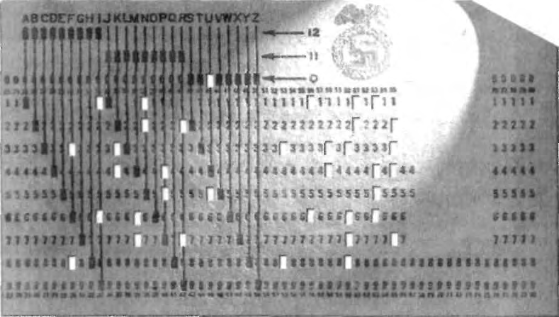

cause
of
world
peace
through
world
trade."9
Watson's advocacy for peace was limitless. May 13, 1940, was pro-
claimed IBM Day at the World's Fair being held that month in New York.
IBM Day was nothing less than an extravaganza of orchestrated adulation for
the company. A dozen chartered trains brought in 7,000 IBM employees and
their wives from company facilities across the nation to visit the architectonic
IBM Pavilion. Each IBMer wore a red ribbon of solidarity with the company.
Two thousand lucky ones were chosen to be feted at a massive Waldorf-Asto-
ria dinner. Special congratulations to IBM, as usual, were issued by leading
politicians from President Roosevelt to the Mayor of New York. To underscore
the drama, Watson commissioned an original orchestral work, The IBM Sym-
phony, a bombastic composition dedicated to the uplifting spirit of the firm.10
The climax of IBM Day, however, was Watson's speech on the subject
of peace. He delivered his sermon to 30,000 specially invited guests gathered
at the vast Court of Peace located in front of the sweeping USA Pavilion.
Mutual Radio broadcast the highly publicized event countrywide.11
Peace was Watson's message. War was bad, he argued at every opportu-
nity. It would prove nothing but military might, waste lives and precious
resources. War was in fact the worst recourse for the world, and all right-
thinking men should be opposed to any involvement with it, Watson
pleaded. As head of the Carnegie Endowment for International Peace, Wat-
son everywhere proclaimed his driving mantra: "World Peace through World
Trade." Indeed, Watson must have seemed to the public like the very cham-
pion of peace and the arch adversary of all conflict. Ironically, at that very
moment, Watson and IBM were in fact Europe's most successful organizers
not of peace, but of the ravages of war.
Even as Watson was preaching the imperatives of peace, IBM was ecsta-
tic about its accomplishments revolutionizing warfare not only for the Third
Reich, but also for its Axis allies and even other European nations about to be
vanquished by Hitler. In spring 1940, J. W Schotte, IBM's general manager
for Europe, dispatched a confidential report from his Geneva office to senior
IBM executives in America. Schotte's dispatch addressed the activities not only
of just Dehomag, but also of the two dozen European subsidiaries and agen-
cies that worked as inter-connected branches of the New York company.12
Schotte's enthusiastic memo was entitled "Our Dealings with War Min-
istries in Europe." It began, "Up to about one and a half years ago [about
the time of Krristallnacht in 1938], our negotiations with the war ministries
of the twenty-four countries which are under the jurisdiction of IBM Euro-
pean headquarters in Geneva, had not been very successful. This was due
to several reasons, but mainly to the fact that in military circles administra-
tion was considered a 'necessary evil' of little importance for the defense of
the country."13
IBM had f i nal l y succeeded in gaining the necessary insider access to
sensitive military projects, Schotte reported, so that company engineers could
properly design punch card applications for war use. Schotte explained that
in prior years "the military men in Europe have been reluctant to reveal their
problems and programs to civilians. It has been overlooked in such instances
that there is a distinct difference between knowing which problems exist and
what system is applied, and the data and figures to which the system has to
be applied."14 As such, Schotte drew a fine theoretical distinction between
IBM possessing specific knowledge of the facts about a military operation,
such as the number of people to be counted or a list of German bombing
raids, and the actions themselves.
The big change in military acceptance of Hollerith systems appeared at
the end of 1938, confirmed Schotte, when "in Germany a campaign started
for, what has been termed . . . 'organization of the second front.'" He elabo-
rated, "In military literature and in newspapers, the importance and neces-
sity of having in all phases of life, behind the front, an organization which
would remain intact and would function with 'Blitzkrieg' efficiency . . . was
brought out. What we had been preaching in vain for years all at once
began to be realized."15
Schotte's memo made clear that only at IBM's initiative did the mili-
tarists comprehend what magic they could achieve with Hollerith automa-
tion. "Lectures on the punched card system were held by our representatives
before officials of the general staff of various countries and, with our men,
the study of possible applications was begun . . . progress was rather slow,
and it was not until about eight or nine months ago [summer 1939] when
conditions in Europe clearly indicated that a war was more or less unavoid-
able, that the matter became acute."16
Asserting that IBM sold to either side and had enjoyed an ever-escalating
volume since the summer of 1939, Schotte's memo declared, "The War Minis-
tries of Yugoslavia, Rumania, Hungary, Poland, Sweden, Holland and France
(these are the ones that I remember very distinctly from memory) sent us or-
ders for punched card equipment, some of which is already installed, others
being installed when the war started, and further equipment not yet installed
or
still
in
transport."17
Revenues from IBM's dominant customer, the Third Reich, was grow-
ing so rapidly, Schotte said he did not yet possess the sales numbers. "We
have no details of Germany," he reported, "but know that a large amount of
punched card equipment is being used by the War Ministry." He added that
so great was Germany's need in the months before and after the invasion of
Poland that the Reich began requisitioning machines. Indeed, the agency
u l t i m a t e l y known as the Maschinelles Berichtwesen (MB) had exercised
full authority over all punch card technology since 1937. "In the second half of
1939," wrote Schotte, "most of our equipment was 'seized' and used to sup-
plement the installations already in operation."18
Once war erupted, the haste to add machines for military use was not
confined to Germany. Schotte's report noted that "rush orders were placed
with us" by those countries not yet properly automated. Most IBM subsidiaries
were two years behind in filling orders, so many war ministries hurried their
orders just to get in queue. "To make up for lost time," Schotte continued,
"Holland and France gave us blank orders for a large quantity of machines,
although our studies were not completed for several of the uses, and the
quantities of required machines not established. As late as February 1940,
the French War Ministry ordered a very substantial quantity of machines."19
Schotte's report clarified that not all war applications were handled
direcdy by war ministries. Numerous systems had been conveyed to private
industry, "but are for their [war ministry] use and under their control."
Therefore, even though a coal mine or insurance company might be listed as
the account, utilization of the machines was dictated by military needs either
on the original corporate premises or moved to a more secure location alto-
gether. Indeed, by spring 1940, his memo confirmed, many such systems had
already been relocated to more protected sites, the report acknowledged.20
Widespread expansion of punch card systems for war was ironically
undermined in various countries by the draft itself, which infringed on the
punch card workforce, asserted Schotte. However, eventually, military
officials exempted "key men in our installations [who then] remained at their
posts." Moreover, "supervisors and our indispensable servicemen were
released for such work." Even still, he added, "A great inconvenience was
caused due to the sudden extension of equipment in most countries, a short-
age of trained supervisors and punch operators. Ads were placed in the
papers and such operators lured away from one installation to another by
offering higher salaries. We hurriedly started training schools for key punch
operators and supervisors, and of course servicemen who would be
exempted from military service due to age or physical condition."21
Europe's militarists had finally realized the indispensable advantages
Hollerith instilled into modern warfare, boasted Schotte. Punch cards freed
up manpower. Schotte cited a typical case: "For example, in Hungary with
one set of machines and a few operators we replaced about sixty men." He
added that the machines "work twenty-four hours without vacation. The
place and location is immaterial and machines have been installed in bomb-
proof cellars. . . . There is no l i m i t to the flexibility and adaptability of the
machines, provided the mass of data to be handled is sufficiendy large."22
Most importandy, stressed Schotte, Hollerith machines guaranteed
"speed in handling mass records and data. Such speed would be absolutely
impossible
by
manual
methods,"
he
stressed.23
Schotte's report included a list of IBM's remarkable accomplishments
for the armies of war-ravaged Europe. Personal information about every
officer and soldier resided on Hollerith systems. In France, for example, the
actual "mobilization call to each officer was printed by our equipment by
means of punch cards." Hollerith machines controlled all payrolls to both
armies and civilian workers in munitions factories.24
So comprehensive was IBM Europe's data on both Germany and its
enemies that Schotte's memo was able to assert that the punch cards main-
tained "records of each and every Communist and Nazi."25
Records were also kept "on skilled laborers by profession, industry, etc.
Such records are kept to control the potential of war material manufacture,"
Schotte's memo specified.26
The labor data tersely alluded to in just a few words in Schotte's memo
was profoundly vital to Hitler. These automated reports allowed the Reich to
strategically deploy both the skilled laborers within Germany and the con-
scripted work brigades and slave gangs shipped in from occupied countries.
It was a daunting organizational challenge. By the end of 1940, the number of
such onscripted and other slave workers totaled nearly 2.5 million. Reporting
formats continuously evolved as the Reich's needs changed and Hollerith tech-
nology improved to keep up. Eventually, reporting categories included what
Germany considered its entire manpower pool, from company owners to
skilled workers to unskilled laborers, divided into male and female columns.
As time evolved, the various cross-indexed reports further classified the cate-
gories into "Reich residents, civilian foreigners, prisoners and Jews," as well
as others. Germany's punch card control agency, Maschinelles Berichtwesen,
coordinated the reports. The agency considered its labor data, "without a
doubt, MB's most important statistical survey on the deployment of indi-
viduals," as a key senior MB official later expressed it. "For all participating
offices," the MB officer emphasized, "this was the major tool for the coordi-
nation and surveillance of work employment in the individual territories and
in the entire Reich. Its results laid the foundation for the ongoing monthly
negotiations on the assignment of workers for armaments production."27
Three years later, Schotte, while in his New York office, would describe
to a government official exactly how the personnel tracking system worked in
Nazi-occupied territories. "For example," wrote the official that Schotte
briefed, "if a Gauleiter [the ranking regional Nazi Party official] in Poland
needs a number of technicians who speak Polish but are not Poles, it is possi-
ble to secure the exact names and locations of the men in their present units
by placing the punched cards in the sorting machine and setting the machine
to provide the correct answer. When the required number has been deter-
mined, the machine stops."28
People weren't all that IBM counted and tracked. Schotte, in his spring
1940 memo to IBM, was also proud of the company's ability to count "ani-
mals: a record of each horse, mule, etc."29
Although mentioned by Schotte only in passing, animal censuses were
complex logistical projects. The Nazis ordered the first such "horse census"
in Poland in early 1940. Jews operated many of the stables and equine opera-
tions in Poland. As part of the confiscation of Jewish assets, horses were
seized and then mobilized by the army to move materials, prisoners, and
even corpse wagons through the frigid, often snowbound Polish countryside,
as well as the cities. By seizing horses, the Reich also cut off an important
means of escape for Jews fleeing Nazi invaders. Orders to German police
units stationed throughout Poland reflected the gravity of the horse count.
Those instructions proclaimed: "In order to secure the Wehrmacht's census of
horses, conducted to avoid a secret shifting around, I request that you, in
conjunction with the county's farmers and all Wehrmacht offices dealing with
the horse census, employ police forces, especially at night, to establish that
horses are not secretly moved from their census districts into other sections.
Captured horses which may have been moved are to be confiscated and their
owners punished." British intelligence agents monitoring the horse census
called the project "tremendous," and in a secret report could only marvel at
the "thoroughness of preparations."30
The spring 1940 cow census in occupied Belgium, also monitored by
British intelligence, reflected an equal feat of livestock counting. After the
count, each animal was required to wear an identity card.31
Schotte's spring 1940 memo also listed the extraordinary programs of
material control covering inventories as diverse as "arms, clothes, airplane
spare parts" and all raw materials, such as "rubber, oil, steel, iron." Moreover,
reported Schotte's report, "records [are] kept of each factory with the type
and class of its machines" and whether they were currently being used for
battle or classed as potential suppliers.32
In occupied lands, material censuses and registrations organized Nazi
plunder of resources. For example, a butter census was scheduled for occu-
pied Denmark to discover large stores of butter hoarded by Danes. As rail-
road cars loaded with the material and merchandise of a foreign country
entered Germany, punch cards kept track of the inventory. This system was
refined as the months progressed and as Germany's occupation broadened.
Schotte later described the evolved system for a government official who
summarized it this way: "The original inventory throughout a country is rep-
resented by cards," the official wrote. "For a period of ten days in Germany,
cards are punched of incoming and outgoing movements and then at the end
of ten days are sorted by commodity, together with the inventory card . . .
[so] the inventory is never more than ten days behind time."33
Schotte's spring 1940 memo also cited the organization of all "automo-
bile records: (military and in some cases also the private cars)." Private vehi-
cles were routinely seized by invading Germans, first from Jews, and then from
other citizens as well. Identifying cars and trucks was one of the first statistical
efforts Germany generally mounted after invading any foreign territory.34
Hollerith machines were deeply involved in combat records as well,
according to Schotte's spring 1940 memo. For example, Luftwaffe missions
were all duly recorded to calculate the details of aviator combat, asserted the
report. Schotte's memo bragged that punch cards maintained a "record of
each flight of a military aviator, for his personal record and calculation of
premiums." In addition, all German war injuries were analyzed by complex
Hollerith programs that allowed Reich planners at the Central Archive for
War Medicine in Berlin to conduct sophisticated medical research. In World
War I, it was Hollerith analyses of head-wound injuries that helped the Aus-
trian military design the most protective helmet possible.35
Schotte's spring 1940 report also listed "decoding" of enemy dispatches
as a prime Hollerith application.36
As each month advanced, Hollerith machines became more involved
in each and every move of the German forces. Eventually, every Nazi com-
bat order, bullet, and troop movement was tracked on an IBM punch card
system.37
In 1940, IBM NY knew the exact location of its machines in the Reich
on an updated basis. Without that tracking, it could not audit IBM Europe's
charges and depreciate its equipment. One typical machine list in its Manhat-
tan office was entitled "International Business Machines Corp. New York"
and labeled in German words "Machines as of September 30, 1940." This
particular thirteen-page inventory identified each machine by client, location,
type, serial number, and value. Five alphabetizes in the 405 model series, for
instance, were located at the German Army High Command. Those five
machines bore serial numbers 10161, 10209, 11316, 13126, and 13128, with
each one valued between RM 8,750 and RM 11.675.38
Other alphabetizers were placed at a myriad of offices, according to the
list, including various military inspectorates, offices of the punch card control
agency, the census bureau, the branches of Reich Statistical Office, and
strategic arms manufacturers such as Krupp and Junkers Aircraft. Again, each
installation reflected the type of machine, serial number, and value.39
Ironically, all the rush orders placed into the militaries of such countries
as Holland and Poland worked to the Reich's advantage. When the Nazis
invaded, all Hollerith machines were seized and converted to German use.
IBM subsidiaries were then on hand to service the Reich's needs. Sales to
Germany's enemies never bothered IBM's hypersensitive Reich sponsors.
Indeed, some in the Nazi hierarchy may have even viewed such sales as a vir-
tual "pre-positioning" of equipment in neighboring nations, nations that
many throughout Europe and America expected to be invaded imminently.
In the case of Poland, for example, IBM leased Hollerith equipment to the
Polish military in 1939 just before the German invasion, and then immedi-
ately after the invasion created a new Berlin-based subsidiary for the occu-
pied territory. Accounts in annexed regions were transferred to Dehomag. In
the case of Holland, systems were leased to the military in early 1940; a com-
pletely new subsidiary was planned in March 1940, just weeks before the
invasion, and rush-formalized just after the invasion.40
IBM had almost single-handedly brought modern warfare into the
information age. Through its persistent, aggressive, unfaltering efforts, IBM
virtually put the "blitz" in the krieg for Nazi Germany. Simply put, IBM orga-
nized the organizers of Hitler's war.
Keeping corporate distance in the face of the company's mounting
involvement was now more imperative than ever. Although deniability was
constructed with enough care to last for decades, the undeniable fact was
that either IBM NY or its European headquarters in Geneva or its individual
subsidiaries, depending upon the year and locale, maintained intimate
knowledge of each and every application wielded by Nazis. This knowledge
was inherendy revealed by an omnipresent paper trail: the cards themselves.
IBM—and only IBM—printed all the cards. Billions of them.
Since Herman Hollerith invented his tabulators at the close of the nine-
teenth century, the feisty inventor had fought continuous technologic and
legal battles to ensure that no source but his company could print a card
compatible with the sorter's complex mechanisms. Once a customer invested
in a Hollerith machine, the customer was continuously tied to the company
for punch cards. This exclusivity was nothing less than the anchor of the
lucrative Hollerith monopoly.41
Watson vigilantly continued Hollerith's legacy. During the Hitler years,
the Department of Justice litigated IBM's monopoly, focusing on the firm's
secret pacts with other potential manufacturers, which forbid any competi-
tion in punch card supply. Unique presses, extraordinary paper, near clinical
storage, exacting specifications, and special permission from Watson were
required for any IBM subsidiary to even begin printing cards anywhere in
the world. Should any non-IBM entity dare enter the field, Watson would
shut them down with court orders. For example, when the German paper
manufacturer Euler, associated with the Powers Company, tried to print
IBM-compatible punch cards, Watson restrained them with an injunction.
For good measure, IBM wrote special clauses into its German contracts pro-
h i b i t i n g any client—whether an ordinary insurance company or the NSDAP
itself—from utilizing any card other than one produced by IBM. In short,
Hollerith cards could only be printed at IBM-owned and -operated printing
facilities and nowhere else.42
Until 1935, IBM NY was the sole exporter of punch cards to Hitler's
Germany. Eventually, Watson invested in high-speed presses for Germany so
Dehomag could print and export its own throughout Europe. During the
next few years, he authorized IBM printing presses in Austria, Poland, Hol-
land, France, and greatly expanded capacity in Germany. Deep into the war,
as late as 1942 additional IBM printing facilities were opened in Finland and
Denmark. All these plants acted as a coordinated cross-border European sup-
ply line. For example, in the first three months of 1939 alone, IBM Sweden
sold 1.9 million punch cards to Denmark, 1.3 million to Finland, and 696,000
to Norway. IBM NY sold 1 million cards to Yugoslavia and 700,000 to Fascist
Spain. Dehomag sold 261,000 to Hungary. It was all done under the constant
supervision of IBM Geneva, which in turn kept in continuous contact with
IBM NY. European General Manager Schotte regularly flew back and forth
from
Switzerland
to
America
conveying
reports.43
IBM printed billions of its electrically sensitive cards each year for its
European customers. But every order was different. Each set was meticu-
lously designed not only for the singular client, but for the client's specific
assignments. The design work was not a rote procedure, but an intense col-
laboration. It began with a protracted investigation of the precise data needs
of the project, as well as the people, items, or services being tabulated. This
required IBM subsidiary "field engineers" to undertake invasive studies of
the subject being measured, often on-site. Was it people? Was it cattle? Was it
airplane engines? Was it pension payments? Was it slave labor? Different data
gathering and card layouts were required for each type of application.44
Once the problem was intimately understood, Hollerith technology was
carefully wedded to the specific mission. This process required a constant
back and forth between the IBM subsidiary's technical staff and client user
as they jointly designed mock-up punch cards to be compatible with the reg-
istration forms, and then ensured that the plug and dial tabulators could be
configured to extract the information. Only after careful approval by both
IBM technicians and the client did the cards finally go to press.45
Once printed, each set of custom-designed punch cards bore its own
distinctive look for its highly specialized purpose. Each set was printed with
its own job-specific layout, with columns arrayed in custom-tailored configu-
rations and then preprinted with unique column labels. Only IBM presses
manufactured these cards, column by column, with the preprinted field topic:
race, nationality, concentration camp, metal drums, combat wounds to leg,
train departure vs. train arrival, type of horse, bank account, wages owed,
property owed, physical racial features possessed—ad infinitum.46
Cards printed for one task could never be used for another. Factory pay-
roll accounting cards, for example, could not be utilized by the SS in its on-
going program of checking family backgrounds for racial features. Differences
in the cards were obvious. Dehomag's 1942 accounting cards for the Bohler-
werk Company, for instance, featured the manufacturer's name centered. The
card contained only 14 columns preprinted with such headings as hours
worked above, column 8, pieces produced above column 9, and suggested
processing time above column 11. The right hand third of the punch card was
empty:47 In contrast, SS Race Office punch cards, printed by Dehomag that
same year, featured a bold Rassenamt SS logo. Rassenamt cards carried custom-
labeled columns ior years of marriage above column 7, height above column
47, height while seated above column 48, and weight above column 49. A sepa-
rate grouping on the Rassenamt card listed "ethnic categories," including sub-
divisions such as Nordic printed above column 50, Oriental above column 57,
Mongolian above column 59, and Negroid above column 60. SS Race Office
cards were crowded from margin to margin with column designations.48
Dehomag's 1933 Prussian census cards featured a large Prussian Statis-
tical Office label and used only 48 columns in total. The census card bore
such preprinted demographic headings as religion over column 24 and
mother tongue over column 28; columns 49-60 were left empty. Coal survey
cards listed sources, grades, and carloads. Luftwaffe cards listed bombing
runs by pilots. Ghettoization registration cards listed Jews block by block.
Railroad punch cards listed cities along a route, schedule information, and
the freight being hauled—whatever that freight might be.49
Each card bore the distinctive ownership imprimatur of the IBM sub-
sidiary as well as the year and month of issue, printed in tiny letters—
generally red—along the short edge of the card. An IBM punch card could
only be used once. After a period of months, the gargantuan stacks of
processed cards were routinely destroyed. Billions more were needed each
year by the Greater Reich and its Axis allies, requiring a sophisticated logisti-
cal network of IBM authorized pulp mills, paper suppliers, and stock trans-
port. Sales revenue for the lucrative supply of cards was continuously
funneled to IBM via various modalities, including its Geneva nexus.50
Slave labor cards were particularly complex on-going projects. The
Reich was constandy changing map borders and Germanizing city and
regional names. Its labor needs became more and more demanding. This
type of punch card operation required numerous handwritten mock-ups and
regular revisions. For example, MB Projects 3090 and 3091 tracking slave
labor involved several mock-up cards, each clearly imprinted with Deho-
mag's name along the edge. Written in hand on a typical sample was the pro-
ject assignment: "work deployment of POWs and prisoners according to
business branches." Toward the left, a column was hand-labeled "number of
employed during the month" next to another column hand-marked "number of
employed at month's end." The center and right-hand column headings were
each scribbled in: French, Belgium, British, Yugoslavian, Polish.51
Another card in the series was entitled "registration of male and female
workers and employees." Hand-scribbled column headings itemized such con-
quered territory as Bialystok [Poland], Netherlands, Protectorate [Czechoslo-
vakia], and Croatia. Noted in pen near the bottom were special instructions
about the left-hand row: "columns 56-59 members of Polish ethnicity go with
hole 1 "and "columns 56-59 members of Ukrainian ethnicity go with hole 2."52
Yet another Dehomag mock-up card in MB Project 3090 was hand-
titled "registration of male and female foreign workers and employees."'The
scrawled column headings included: road worker, miners, textile workers, con-
struction workers, chemists, technicians.53
Cards were only the beginning. All decisions about precisely which col-
umn and which row could be punched in order to properly record, tabulate,
and sort any portion of data were studiously determined in advance by
Hollerith engineers. Making the cards readable by IBM sorters required spe-
cial settings on the machines that only company engineers could adjust. This
involved review of machine schematics to ascertain which adjustments were
needed for each data run. Once an assignment was undertaken, the sub-
sidiary or its authorized local dealers would then continuously train the Nazi
or other personnel involved to use the equipment, whether puncher, sorter,
or tabulator. The delicate machines, easily nudged out of whack by their con-
stant syncopation, were serviced on-site, generally monthly, whether that site
was in the registration center at Mauthausen concentration camp, the SS
offices at Dachau, or the census bureau in any country.54 Without this abun-
dance of precision planning, assistance, and supply of systems, IBM's Hol-
leriths just could not work—nor could their benefits be derived.
Naturally, IBM profits boomed. In February 1940, IBM Geneva sent
IBM NY a month-by-month review of Dehomag's record profit increases in
the last half of 1939. June profits increased RM 96,680 over May profits. July
bettered June's amount by RM 123,015. August continued to set another
record, beating July by RM 98,006, and so on for the rest of the year.55
In April, IBM executives in both Geneva and New York continued to
marvel at Dehomag's unprecedented profit increases, including the unex-
pected nearly RM 1.8 million boost in December 1939. Auditors could not
wait for details, reporting, "we telegraphed to Berlin for further information
which we are now awaiting."56
It was never clear exacdy how much true profit IBM earned worldwide
because of the stealthy way its many subsidiaries classified and reclassified
revenues to avoid taxation. Not all that was profitable was declared a profit.
However, in mid-1940, even after applying its best accountancy transmogrifi-
cations, the New York office was compelled to announce yet another in a
string of profit records, this one for the first half of the year. Just less than a
$6 million gross profit for the six-month period was conceded, and that was
without adding about a million-dollar foreign profit blocked in Germany and
elsewhere. That $6 million half-year profit was about a half million higher
than the same period a year before. Few in the financial community were sur-
prised. IBM profits had been in a steep climb since the day Hitler came to
power.57 Clearly, the war was good to IBM coffers.
Indeed, in many ways the war seemed an ideal financial opportunity to
Watson. Like many, he fully expected Germany to trample over all of Europe,
creating a new economic order, one in which IBM would rule the data domain.
Like many, Watson expected that America would stay out of the war, and when
it was over, businessmen like him would pick up the post-war economic pieces.
In fact, Watson began planning for the post-war boom and a complete
reorganization of the world's economic system almost as soon as the war
began. By late April 1940, he had convened a stellar Committee for Eco-
nomic Reconstruction j o i n t l y sponsored by the two organizations he domi-
nated, the ICC and the Carnegie Endowment for Peace. This group planned
to rewrite the rules of international trade and economic sovereignty, essen-
tially parceling out the world's resources when the war concluded. Watson
introduced the plan to his fellow industrialists attending an April 29, 1940,
ICC dinner in Washington D.C. "Our program," asserted Watson, "is for
national committees in the individual countries to study their own problems
from the standpoint of what they need from other countries and what they
have to furnish other countries." It was the same Hitleresque message Wat-
son had been preaching for years. Some countries, both men believed, were
simply entided to the natural resources of another. War could be avoided by
ceding these materials in advance.58
No time was wasted in making plans. "We are carrying on just as though
there wasn't any war, if you can believe it, and probably you don't," declared
Eliot Wadsworth, chairman of the ICC's American Committee, when he con-
vened the April 29, 1940, meeting. Wadsworth, a Watson confidant, revealed
that "already two meetings have been held among representatives of the sec-
tions of the International Chamber in spite of the fact that it is contradictory
to th regulations of the belligerent countries. . . . England, France and Ger-
many have allowed the representatives of their sections to meet in friendly
discussion at The Hague to consider the ... future program."59
Just days after the ICC's dinner, Hitler launched his savage Blitzkrieg
invasions overrunning Luxembourg, Holland, and Belgium. An outraged
public could turn nowhere without seeing German atrocities depicted on
newsreel screens or the front pages of newspapers. Horror stories from
refugees, governments-in-exile, diplomats, and journalists alike would not
stop. Although the nation was divided on the wisdom of entering the war,
many nonetheless felt certain America would soon join the battle against
Germany. Anti-Nazi sentiment intensified. A Gallup poll taken shortly after
the Reich's spring offensive began showed only 2 percent of Americans felt
Hitler's invasion of Belgium or Holland could be justified.60
As the public mood swelled against all things Nazi, Watson was now
confronted with one major public relations problem: his medal.
Despite all the persecutions, atrocities, plunder, and invasions, Watson
remained the proud holder of der Fuhrer's Merit Cross of the German Eagle
with Star bestowed in 1937 at the ICC Congress in Berlin. Hitler's medal was
a very public link. Holding it in the face of daily aggression was inherently an
acceptance of Hitler's actions.
At the same time, Watson had avoided virtually all criticism of the Hitler
regime beyond offering boyish aphorisms to observe the Golden Rule, and
calling the invasion of Poland "a difference of opinion." He could not afford
to offend his second-biggest customer, a customer that would soon emerge
as the new dictatorial ruler of Europe. On the other hand, Watson would
never allow his legendary and patriotic position in the United States to be
compromised.
Events were squeezing Watson.
On May 16, 1940, the day after Holland capitulated, Watson did as he
always did: he reached out to his friends in the White House and State
Department for political cover. That day, he dispatched a note to Secretary of
State Cordell Hull asking if the United States government wanted him to
return the medal. Watson could then attribute his return or refusal to return
the decoration to Hull's specific counsel. Now, however, the American gov-
ernment was openly anti-Nazi.61
Hull would not even become involved. The Secretary immediately
wrote back: "I feel that this is a matter upon which the decision will have
to rest entirely with you, and is not one upon which this Government would
be able to take a position." Hull penned a personal regret in the margin,
"I would offer advice to no person sooner than you."62
Four days later, on May 24, Watson took his first overt step of identifica-
tion with the victims of Nazi aggression. He agreed to chair an emergency
committee to raise $3 million for the relief of Dutch refugees.63
But now, IBM itself was coming under scrutiny for its Nazi connections.
The company had become a virtual way station for German nationals transit-
ing in and out of New York for training, meetings, and conferences. Some of
these men were now moving with the vanguard of the German destruction
machine in Austria, Czechoslovakia, Poland, and Holland. Others had been
transferred to South America. A number of German nationals were actually
stationed at IBM offices in the United States. Some of them were openly anti-
Semitic and pro-Nazi. To even express pro-Nazi opinions was now consid-
ered anti-American.64 Beyond the vaunted publicity stunts and symphonies,
IBM's Nazi alliance was quietly emerging from the haze.
At the end of May 1940, FBI Director J. Edgar Hoover became inter-
ested in IBM's Nazi connections. Suspecting the company of hosting a hot-
bed of Nazi agitation, the Federal Bureau of Investigation, in late May,
launched wide-ranging investigations on at least four German nationals
employed by IBM and suspected of espionage or other subversive conduct.
Although no charges were ever brought, more probes would follow and they
would continue for years. Assistant Secretary of State Adolf Berle became the
State Department's point man fo r espionage concerns at IBM. Berle and
Hoover began to regularly trade information on the suspected spies at IBM.
In short order, federal agents and local police intelligence officers were dis-
patched to IBM offices in Manhattan, Endicott, Albany, Cincinnati, and Mil-
waukee
asking
probative
questions.65
Eventually, the FBI interviewed senior company executives in their
IBM offices, including the executive secretary, sales manager, education de-
partment director, and even Executive Vice President and General Manager
Frederick Nichol. The field investigations soon came to the door of several
IBM clients. Customers were asked about any pro-Nazi remarks overheard
from at least one suspect IBM salesman in Milwaukee. The postmaster in
Darien, Connecticut, was asked about rumors involving a leading IBM tech-
nical editor, a German national working in New York who was said to be part
of
an
anti-Jewish
society
and
expressing
pro-Reich
feelings.66
As soon as Watson learned of the FBI's interest, indeed even before the
agency could organize its investigations, he went into action. Watson and
Nichol visited Undersecretary of State Sumner Welles on June 6 to volunteer
personal details about potentially suspect IBM employees in the U.S. and
Latin America. Watson made it clear he would cooperate in any way, and take
immediate steps to sever corporate relations with any individual the govern-
ment thought questionable, including several specifically discussed in the
Colombia and Mexico City offices. Welles referred the information Watson
proffered to Berle, who in turn forwarded it on to J. Edgar Hoover. Ironi-
cally, when Watson and Nichol met with Welles at the State Department on
June 6, the two IBM executives forgot to mention one particular salesman by
the name of Karl Georg Ruthe.67
The FBI soon took an intense interest in German-born Ruthe for the
many reports of his rabidly pro-Hitler statements while in IBM offices and
even at customer sites. One widely distributed FBI file memo related the
comments of an auditor at Blatz Brewery in Milwaukee, one of the IBM cus-
tomers Ruthe had visited. A Blatz auditor passed on Ruthe's remarks report-
edly expressing "strong sympathies for Germany and [the] thought that
Hitler was justified in everything he did, inasmuch as Germany was given a
very unfair deal in the last World War."68
Another FBI report quoted IBM's Milwaukee manager reporting that
Ruthe "was quite boastful and would predict the outcome of the batdes that
are taking place in Europe, and that he kept the office force in a general tur-
moil with his constant talk about Hitler and what he [Hitler] was going to do
to the European nations." Ruthe was also rumored in FBI files to be a mem-
ber of the Bund, an association of German-American Nazis.69
Few could understand Ruthe's continuing position in the company
since he was hired in 1936. He did not fit the IBM mold. Reported in FBI
files as a "drunk" and "a poor salesman," Ruthe was said to have seriously
under-performed at the Endicott sales training school. Indeed, when Ruthe
was transferred from the New York office to IBM Milwaukee, his superior
were asked to keep tabs on him.70
Although Watson and Nichol forgot to mention Ruthe during their
June 6 discussion, they did remember several days later, when Nichol sent a
letter to Welles marked "Stricdy Confidential." Nichol wrote, "In the discus-
sion which Mr. Watson and I had with you on Thursday June 6, we over-
looked mentioning the name of Mr. Karl Georg Ruthe. The facts concerning
him are as follows." Nichol then listed in a column Ruthe's date and place of
birth in Germany, graduating school in Germany, the four languages he
spoke, home address, and citizen status—which was "American Citizen."71
Nichol added some other background: "Mr. Ruthe was first employed
by us on December 1, 1936, in New York in a sales capacity. He spent three
months at our school at Endicott, N.Y., from July to October 1937, when he
was assigned to Milwaukee, still in a sales capacity. Prior to working for us,
Mr. Ruthe was a tutor of modern languages in New York City; had his own
school in Schenectady (the Schenectady School of Languages) and was an
instructor of German at Union College in Schenectady. We understand him
to be an American citizen, and believe that his parents reside in Germany. It
so happens that we saw fit to ask for this man's resignation last week, based
solely, however, on his inability to produce a record as a salesman in this
business." Nichol included nothing more on Ruthe.72
Ironically, when the FBI inquired as to how a person such as Ruthe
could remain at IBM so long, they discovered that Watson had omitted some
pertinent details. The FBI file cited observations received from IBM Sales
Manager Fred Farwell: "Subject's work was so poor," an FBI report recorded,
"that he would have never been allowed to finish the IBM School and go out
into the Field as a salesman had it not been for his close relationship to Mr.
Watson, President of IBM; that as a matter of fact, Subject had been a con-
stant source of trouble to all men in administrative positions who came in
contact with Subject. And that Subject was only kept as an employee for the
length of time, in view of his relationship to the President of the Company."
Farwell added that Ruthe had married Watson's niece.73
The first week of June was a tense one for Watson. On June 3, 200 Ger-
man planes dropped 1,060 explosive bombs and 61 incendiaries on Paris
itself. More than 97 buildings were struck, including two hospitals and ten
schools, killing 45. Ten children died at one demolished school alone. U.S.
Ambassador to France William Bullitt himself narrowly missed death. While
he was lunching with the French Air Minister, a bomb crashed through the
roof and into the dining room, showering everyone with glass shards, but the
device failed to explode.74
The public mood was reflected in a page one story in the New York
Times, June 4, reporting a mere off-hand comment to an elevator boy by a
German diplomat arriving in Buenos Aires, Argentina. The diplomat asked if
the young man could speak German. When the youth replied that he could
not, the diplomat shot back, "Well, you'd better learn it, you are going to
need it."75
On June 6, newspapers across the country, including the New York
Times, reliably reported that the Gestapo was scouring Amsterdam armed
with special lists of the "enemies of Germany." Those rounded up were "liq-
uidated. . . . Nearly all have faced firing squads," the syndicated articles
reported. Rumors that the names and addresses of all Jews living in Holland
had already been turned over to Nazi agents were also circulating in both
German and American papers. That same day, some 2,000 German tanks
began rolling toward Paris for what was being called the "Battle of France."
Reich bombers hit the British coasdine. All this was happening on the very
day Watson was in Washington, D.C., assuring Undersecretary of State Welles
that IBM would rid itself of Nazi sympathizers.76
The long delayed moment had come. That day, June 6, Watson wrote a
reluctant letter to Adolf Hitler. This one would not be misaddressed or
undelivered. This one would be sent by registered mail and released to the
newspapers. Watson returned the medal Hitler had personally granted—and
he chose to return it publicly via the media. The letter declared: "the present
policies of your government are contrary to the causes for which I have been
working and for which I received the decoration."77
In Germany, Watson's action would be considered the highest form of
insult to der Fuhrer at a moment of German glory. The public manner of Wat-
son's rejection only heightened the affront. This would change everything.
In Berlin, at Dehomag, all hell broke loose.
9 THE DEHOMAG REVOLT
JUNE 10, 194O
Memo to Willy Heidinger
Re: Mr. Watson
I
am
setting
up
a
confidential
file
in
this
matter
...
[and]
sending
you
a
copy
of
yesterday's
edition
of
the
Volkischer
Beobachter. It states that Mr. Watson has returned the medal,
which
the
Fuhrer
had
bestowed
upon
him....
This
stupid
step of Mr. Watson's opens up a number of possibilities. At
the moment, we have decided not to start anything ourselves
but will wait to see who might approach us, if anybody. It is
not improbable that such a step may harm the company, and
all
of
us,
very
seriously—sooner
or
later—since
it
must
be
considered as an insult to the Fiihrer and therefore the Ger-
man people.
Mr.
Hummel
has
been
deliberating
whether
we
can
even
continue in the management of the Dehomag in light of this
deliberate
insult....
I
have
assumed
the
position
that
our
first duty and obligation is to place all our strength at the
disposal of this enterprise which is so important for the con-
duct of the war. It is imperative that this company meet all
the tasks that the German economy has imposed on it, par-
ticularly in time of war. Moreover, there is no reason to cause
218
the Dehomag and its employees any harm merely because of the per-
sonal hatefulness and stupidity of one American.
It appears that Mr. Watson is surrounding himself with a group of
Jews who fled from Europe.. . . It appears that the influence of these
Jews, in addition to the anti-German Jewish and other lies in news-
papers, are beginning to affect his mind and to impede his judgment.
Even if he [Watson] should have pretended friendship for Germany
and if his true opinion did not become apparent until now, it is evident
that this act is terribly inane, looking at it from a purely commercial
point of view. It seems Mr. Watson, with great vanity, wants to insult
the Fiihrer of the German people, but he does not realize that there
can only be one result of this act, if there is any at all, namely, that
Mr. Watson's personal economic interests can be affected.
Nevertheless this step is indicative of the great excitement in Amer-
ica; therefore the danger that America may enter the war is somewhat
closer. If this should happen we would have to examine the possibility
of separating ourselves from [IBM] America in view of the new condi-
tions. Naturally the Economics Ministry will examine carefully whether
Germany receives more royalties from America or vice versa.... we
would welcome it if the royalty agreement between Dehomag and IBM
could be dissolved entirely. One could assume the position that the
mutual contributions should stop with an exchange of patents....
Therefore, if we renounce any further contributions [from IBM NY],
no royalties should have to be paid in the future. The IBM interest in
the Dehomag would then have to be transferred into German hands in
some form or other.... Savings of royalties could be paid into a war
fund and at a future time the rentals could be lowered to correspond
to the present royalty.
In any case I have the feeling that Mr. Watson is sawing the branch
on which he and his IBM are sitting.
From Hermann Rottke1
The war was on.
Nazism's favorite capitalist had fallen from the Reich's imagined cloud
line. By returning the medal, Watson had turned on der Fuhrer, insulted the
German people, and proved that IBM was no longer a reliable ally of the
Third Reich. Everywhere among the insider echelons of Nazidom and Ger-
man media, Watson's name was reviled. Hitler's personal paper, Volkischer
Beobachter, declared that the "vultures of profit smell the fry," adding with
regret, "it might have been expected that . . . Thomas Watson would have a
broader outlook than the hate-blinded Jewish editors and journalists."2
Nazi castigation was not limited to the Greater Reich, but was broadcast
by German radio and newspapers in the invaded countries as well. Quickly,
IBM managers in occupied Czechoslovakia, Poland, Norway, and other Nazi-
dominated lands learned of Watson's affront. They felt the impact immedi-
ately as their German customers, corporate and government, expressed
displeasure. Fascists in other Axis countries were equally offended. Mus-
solini's people in Rome were furious with Watson Italiana, summoning the
subsidiary's director to a formal reproach.3
All the suppressed but long festering resentment at Dehomag now coa-
lesced into a unified list of grievances. Dehomag was a German company that
Watson stole. IBM NY represented foreign domination and therefore the
very antithesis of National Socialist doctrine. The American parent company
was charging exorbitant royalties and reaping huge profits, thereby exploit-
ing the German nation. Most of all, Heidinger hated Watson. It all became a
single impetus for open corporate rebellion.
The backlash was immediate. In Dehomag's Lichterfelde office, Wat-
son's picture was removed from the wall. Stuttgart employees did the same.
In the Hamburg, Frankfurt, and Vienna branches—and ultimately in every
one of the German subsidiary's offices—the pictures of Watson were quickly
taken down.4 That was only the beginning.
Spurred by equal parts personal greed and Nazi fervor, Heidinger and
Rottke began scheming to completely eliminate IBM NY's influence from
Dehomag's realm. Step-by-step, they would now pressure IBM either to sell
the subsidiary to German nationals, or at least reduce the foreign ownership
from a majority to a minority. Ousting his personal representatives from
the Berlin subsidiary's board of directors would also end Watson's micro-
management of Dehomag operations. Plain and simple: Heidinger, Rottke,
and Hummel now saw Thomas J. Watson and IBM NY as little more than a
foreign nemesis—a nemesis they were determined to cast off.
To begin his putsch, Heidinger retreated into a precise reading of Ger-
man corporate law. On July 1, 1940, he sent a registered letter to IBM
Geneva convening a special board meeting to discuss the crisis caused by
Watson's insult to Hitler and to expel IBM NY's representative, Geneva-
based John Holt, from the three-seat board.5
Using charged language, the meeting agenda declared that Holt would
be "eliminated" by a vote of the local board because he was an absentee
director and thereby "prevented from fulfilling his obligations." IBM re-
sponded to the challenge with coolness. Geneva cabled a power of attorney to
IBM's local representative, Albert Zimmermann, authorizing him to discuss the
issue, of course, but then to vote IBM NY's majority against replacing Holt.6
Insufficient, declared Heidinger. Under a strict reading of German cor-
porate law, a power of attorney required a certain sworn written form, and an
authorizing cable alone was legally unacceptable. On July 15, Heidinger con-
vened a brief sixty-minute board meeting, disallowing Zimmermann's dis-
senting proxy. Then the two resident board members, Heidinger and his
brother-in-law, Dr. Gustav Vogt, voted Holt out. "All persons present agree
that it is advisable to straighten matters," the rebellious German board
resolved by "the elimination from the board of directors of Mr. Holt. . . .
Considering the present situation ... all persons present propose a personality
[as a replacement] who is also esteemed by the German [authorities]." Tech-
nically, however, with Zimmermann's proxy disqualified, a voting quorum
was not present. Therefore, while Holt could be voted out by the board
alone, his replacement could not be properly voted in under German law
except by the stockholders themselves. IBM was the largest, holding 85
percent.7
Knowing Watson's proclivity for hiring lawyers to defend hairsplitting
legal positions, Dehomag adhered to the explicit letter of the law. Heidinger
sheduled another immediate meeting, just two weeks later, on July 29, to
elect the "replacement of the eliminated member, Mr. Holt," as the board
minutes phrased it. Under German corporate law, the minutes noted, if IBM
declined to provide a proper written proxy for the second meeting, then the
token minority 15 percent ownership—that is, Heidinger, Rottke, and
Hummel—could vote in whomever they wished to replace Holt.8 Doing so
would neutralize Watson.
Just after the July 15 meeting adjourned, a brusque Dehomag letter
was dispatched to IBM Geneva. Citing German law and company statute
down to the sub-paragraph, Dehomag's notice advised Geneva that its previ-
ous cabled proxy to Zimmermann was unacceptable in its form. With or
without the approval of IBM NY, the letter blundy warned, the re-scheduled
July 29 meeting would address the Watson medal crisis "and its eventual
consequences for our company," as well as the "replacement of the elimi-
nated member, Mr. Holt."9
For years, cabled instructions from Geneva and New York projecting
Watson's micro-management had been routine facts of corporate life for
Dehomag. But all that was before Watson returned the decoration. Now Hei-
dinger had the momentum to work his own will. He would force his issues
with a combination of strict legal interpretation and rapid-fire corporate
maneuvers.
Heidinger's July 15 correspondence to IBM Geneva warned the parent
company that should it fail to provide the proper proxy form for the July 29
meeting, or fail to ratify Berlin's choice for a new board member, a stalemate
would prove just as destructive. Then, "no decisions binding the company
can be taken," Heidinger warned, adding, "To enlighten matters, we wish to
state that according to ... [German corporate] law, the board of directors has
to be composed of three persons at least."10 Holt's ouster left only two sitting
board members: Heidinger and his brother-in-law Vogt. Without three on
Dehomag's board, the firm would be illegitimate and incapable of function-
ing as a corporate entity.
To ensure that Watson could not litigate the board putsch as setting
"unreasonable" deadlines in view of difficult wartime circumstances, Hei-
dinger scheduled the July 29 meeting not in Dehomag's Berlin headquarters,
but in the subsidiary's Munich branch. Munich was much closer to IBM's
Geneva office, "thus diminishing your traveling time," Heidinger carefully
wrote to IBM Geneva.11
This time, IBM rushed to comply. Watson's Geneva representatives did
not feel comfortable entering Germany with officials agitated. But they did
present their resident German agent, Zimmermann, with a proper power of
attorney. The July 29 board meeting in Munich convened at 10 A.M. with a
reading of the rules and relevant statutes. Quickly, they did away with the
traditional balance sheets showing losses resulting in zero bonuses. Hei-
dinger forced adoption of the true profits totals: nearly RM 2.4 million for
1938 and almost RM 4 million for 1939. Management bonuses of nearly RM
400,000 were approved for Rottke and Hummel. Heidinger reserved his own
bonus for later.12
The medal crisis was then vigorously debated "in view of the great
urgency of this question." Heidinger demanded that Holt's seat on the board
be filled not by one German director, but two. He nominated Emil Ziegler
on the suggestion of the Berlin Chamber of Commerce. The second nomina-
tion was a leading Nazi official, Ernst Schulte-Strathaus, a key advisor in
Deputy Fuhrer Rudolf Hess' office.13
Dehomag was to become completely Nazified. The hierarchy had plans
for Hollerith machines that stretched to virtually all the Reich's most urgent
needs, from the conflict in Europe to Hitler's war against European Jewry.
Some of the plans were so sensitive they could not be discussed with out-
siders. It was absolutely essential that Dehomag be controlled by the highest
Nazi party and government circles. Heidinger had connections at those lev-
els, which had benefited Dehomag through the Hitler years.
Heidinger had been a friend of Hess' since their soldiering days in
World War I. The Schulte-Strathaus family had, in 1910, helped Heidinger
lauch the original Hollerith Company in Germany. Bonds remained tight
durin g the post-War years. Ernst Schulte-Strathaus had emerged as one of
the bizarre and mysterious personalities at the top of the Nazi leadership. A
doctrinaire astrologer, Schulte-Strathaus read the stars for Hess.14
In the July 29 board meeting, Heidinger demanded that Schulte-
Strata u s be ratified. In fact, Heidinger had already invited him to join the
board and Schulte-Strathaus had already accepted.15 So he expected a unan-
imous yes.
But Watson was not ready to allow Heidinger to dictate who could sit
on the board—even if the proposed man was a personal advisor to Deputy
Fuhrer Hess. Zimmermann declared that he was instructed to vote against
Schulte-Strathaus. Wielding IBM's majority, the measure was defeated. Wat-
son preferred either Rottke or Hummel, both of whom owned token stock
options, or Zimmermann himself. Heidinger staunchly refused to even allow
Watson's suggestions to be voted, asserting that German corporate law made
employees ineligible for seats on a board of directors. Heidinger insisted on
Schulte-Strathaus as a representative of Hess.16
Heidinger adjourned the meeting in a stalemate. Next, he decided to
either cash out of the company, or pressure IBM into essentially walking
away from its subsidiary. The stakes were immense for Germany.
Hess' office was not the only one determined to ensure the complete
cooperation of Dehomag. Other key Party advisors to der Fuhrer's office,
soon to emerge, also had plans for IBM's equipment. But the strategic
alliance with IBM was too entrenched to simply switch off. Since the birth of
the Third Reich, Germany had automated virtually its entire economy, as
well as most government operations and Nazi Party activities, using a single
technology: Hollerith. Elaborate data operations were in full swing every-
where in Germany and its conquered lands. The country suddenly discov-
ered its own vulnerable over-dependence on IBM machinery.
Millions of cards each week were needed to run the sorters. Indeed, the
military alone employed some 30,000 people in their Hollerith services.
Adding other governmental and commercial clients, at any given time, thou-
sands of operators were working at Holleriths. Watson presses printed all the
cards these people needed moment to moment. IBM's paper and pulp supply
lines extended to mills throughout the world. IBM owned the patents for the
unique paper stock the Holleriths required. At the same time, Germany's war
industry suffered from a chronic paper and pulp shortage due to a lack of
supply and the diversion of basic pulping ingredients to war propellants.
Only four specialized paper plants in Germany could even produce Hollerith
card stock—all were on contract to IBM. The few paper houses in France
were running low on coal and cellulose supplies, hence their deliveries could
never be assured for more than a month or two at a time. IBM was con-
standy pooling its global paper resources, including its abundant North
American suppliers, to meet the ever-increasing demand. The Reich could
not tap into the vital North American paper markets. Holleriths could not
function without IBM's unique paper. Watson controlled the paper.17
Printing cards was a stop-start process that under optimal conditions
yielded 65,000 cards per eight-hour shift. The Third Reich consumed cards
at an almost fantastic rate. In 1938, more than 600 million per year were con-
sumed from German sources alone. In 1939, that number almost doubled to
1.118 billion. Projected use by 1943 was 1.5 billion just within the Reich.
Building a printing press was a six-month process at best, much longer when
the metals were not available. Dehomag clients typically stockpiled a mere
thirty-day supply of finished punch card paper. Holleriths could not function
without cards. Watson controlled the cards.18
Precision maintenance was needed monthly on the sensitive gears, tum-
blers, and cogs on thousands of machines that syncopated millions of times
each week throughout Nazi Europe. Building new factories might take six
months to a year just for the first machine tools to arrive from specialized
machine tool works. Long tool manufacturing lead times were always
needed. In 1937, IBM ordered three inclinable power presses for planned
factory expansion; delivery times for the power presses required ten or
eleven months. Three six-spindle drill presses required eight to twelve
months. A three-spindle drill required sixteen months. A radial arm drill
required twelve months. Two plain milling machines and a vertical miller
required twenty-four months. Even working at peak capacity in tandem with
recently opened IBM factories in Germany, Austria, Italy, and France, Nazi
requests for sorters, tabulators, and collators were back-ordered twenty-four
months. Hollerith systems could not function without machines or spare
parts. Watson controlled the machines and the spare parts.19
Watson's monopoly could be replaced—but it would take years. Even
if the Reich confiscated every IBM printing plant in Nazi-dominated Europe,
and seized every machine, within months the cards and spare parts would
run out. The whole data system would quickly grind to a halt. As it stood in
summer 1941, the IBM enterprise in Nazi Germany was hardly a stand-
alone operation; it depended upon the global financial, technical, and ma-
terial support of IBM NY and i t s seventy worldwide subsidiaries. Watson
controlled all of it.
Without punch card technology, Nazi Germany would be completely
incapable of even a fraction of the automation it had taken for granted,
Returning to manual methods was unthinkable. The Race and Settlement
Office of the SS was typical of those Nazi agencies frustrated over their long-
back-ordered Holleriths. The Race and Setdement Office was a marginal
agency that functioned as a marriage-assistance bureau for SS officers, and
therefore did not merit its own Hollerith. While it was waiting, Race and Set-
tlement department heads complained in one typical statistical report that
the office simply could not keep up with its prodigious raceology responsibil-
ities without a punch card system. "At least 7,000 applicants," the report con-
ceded, "who fulfilled the [racial] requirements for marriage have been
waiting years for their Certificates of Approval from the Reichsfuhrer-SS."
What's more, 50,000 additional applicants were also waiting for further doc-
umentation reviews, the report continued, and more than 100,000 applicants
had only been provisionally accepted into the SS until the office could prop-
erly "complete their family trees back to 1800."20
"I have determined," wrote the SS Race and Setdement Office's statisti-
cal chief, "that the Hollerith punch card system, which is being used success-
fully by the Reich Statistics Office, Reichsbahn, Reichspost, Reichsbank, etc, as
well as various research facilities . . . is necessary and would serve our inter-
ests best."21
The Race and Setdement statistical chief succincdy explained the
Hollerith difference in these words: "The [manual] way in which the files are
[currently] stored, makes any quick and efficient survey impossible. It would
require months of work looking through individual files to answer even one
[racial] question." He added, "For every single one of the additional future
tasks, months of tedious clerical work would be necessary just to determine
how many and which [racial] petitions are involved. The punch card system
would be able to determine this easily, quickly to the desired date.... There-
fore, card indexing is indispensable." The SS statistician concluded that the
high cost of the IBM equipment was justified because this was the "exact
instrument for complete surveillance both on a large scale and down to the
smallest detail."22
The SS Race and Settlement Office was finally allocated its Hollerith,
but only in 1943, two and a half years after inaugurating the collection of the
marriage data it sought to automate.23
With punch card technology so vital to German operations, it was no
wonder that after Watson ostentatiously returned Hitler's medal, Reich plan-
ners suddenly worried about their entire Hollerith infrastructure. Ber l i n
launched the same struggle for autarky, that is, national self-sufficiency,
already underway for armaments and raw materials, such as rubber. Out-
raged Nazi leaders became determined to replace IBM technology with a
punch card system they could control. It was a matter of Nazi necessity. It
was a matter of Nazi pride.
The quiet effort began in France, which had fallen to German domina-
tion in mid-June, just days after Watson returned the medal. Nazi engineer
and Dehomag-trained punch card specialists from Berlin quickly began
pilfering the machines of IBM's French subsidiary, bringing them back to
Germany for urgent assignments. No longer bound to honor Watson as a
business partner, Reich agents categorized the machines as "war booty" that
could simply be seized.24
Next, Hermann Goering's circle purchased a majority control of the tiny
Powers operation in France, hoping to merge it into a Germanized cartel.
Nazi representatives even brought in for examination a rival machine pro-
duced by a small fledgling French company called Bull, which enjoyed about
25 percent of the fragmented French market. Plans were already underway to
purchase a majority control of Bull, which had wielded no mass manufactur-
ing operation but offered a replicable design. Watson had long tried to neu-
tralize the tiny Bull operation with patent litigation, buy-out offers, employee
raids, and even outright purchases of Bull's operations in Switzerland. But
Bull, even though dwarfed by IBM, still had a number of machines in opera-
tion. And its machinery was considered as good as any Hollerith.25
But Berlin really didn't know what to do. They stole some IBM
machines in France, purchased control of a Powers subsidiary, and brought
in Bull machines, all envisioning a new cartel. None of it was coordinated,
but something had to be done to counteract Germany's dependence on IBM.
From the Reich's point of view, Watson and IBM clearly possessed an
insider's understanding of virtually everything Germany did and indeed all
of its advance planning. That had to stop. Argue as they might, IBM NY
officials were unable to convince Nazi officials otherwise, even when New
York emphasized that only non-American IBM employees possessed access
to the Reich's most sensitive secrets. Watson's Berlin attorney, Heinrich
Albert, offered a written opinion summing up the problem. "The military
authorities are greatly concerned with the whole matter," wrote Albert
shortly after the Dehomag revolt began. "Not only are most military agencies
and offices equipped with these special machines but the authorities are also
afraid that via the majority of IBM in the Dehomag, the USA [itself] might
get a far-reaching insight into the activities not only of Dehomag itself, but
also of the big German rearmament plants and the German economic struc-
ture as a whole. This fear is based on the particular organization of the busi-
ness of Dehomag and is not quite as unfounded as it might appear from the
very beginning.26
"The Dehomag does not sell its machines," Albert continued, "but lets
them out on lease. Before concluding a contract of lease, a thorough study of
the [client] company, or business enterprise which wants to have the
machines, is made from the point of view whether the use of the machines
fits into the system of the prospect, whether the use of them is advantageous,
and how the business must be organized to use the machines to the greatest
possible advantage. There can be no doubt that this method . . . secures to
the Dehomag a contact and insight into the big business of the nation supe-
rior to any other company."27
Albert added that IBM's counterarguments and rationales were simply
not credible to the authorities. "It is no use to argue that this fear is
absolutely theoretical and has no foundation [in fact] whatever in practice, as
not only no American citizen is employed in this part of the business ... [or
that] these studies are kept most confidential and secret according to the
strictest general rules and regulations. There the objection and the handicap
is and must be taken into consideration."28
From IBM's point of view, the struggle to create an alliance with Nazi
Germany had been too great and the potential for continuing profits too
rewarding to simply walk away. Nor would Watson tolerate competitors—
existing or newly created—invading IBM's hard won territory. Since the
dusty horse-and-buggy days of National Cash Register, Watson had learned
not to compete, but to eliminate all competition—no matter how marginal—
by any pernicious tactics necessary.
IBM Geneva troubleshooter, P. Taylor, in an August 1940 letter to the
New York headquarters, worried openly about the threat should the Third
Reich develop Bull machines or an ersatz hybrid—even though it would take
years to switch. "The danger of this is, of course, that the Bull machines do
exactly the same as Dehomag's," wrote Taylor, "whilst also having alphabetic
and printing units, and [if obtained] they can easily be exchanged to replace
Dehomag machines."29
Heidinger had obtained a one-week travel permit and on August 15,
1940, he visited Taylorin IBM's Geneva office to lodge his threats and
demands. He was not subtle.30
"Foreign partnerships in German companies are not very much liked,"
Heidinger told Taylor, "particularly where the foreign interest is a majority.
The IBM majority in the Dehomag was not very helpful, but did not cause
too much harm—up to now. The situation is entirely changed by the step of
Mr. Watson giving back his German decoration and writing a letter to the
Fuhrer published in the American press. That step is considered as an insult
of the highest degree not only to Hitler, but to each individual German.
What could be the consequences? Each customer or prospect will try to
avoid getting punched card machines from a company which proved or at
least appears to be hostile to Germany. Therefore an already existing or a
new-formed German company taking up the manufacture and sale of such
machines will have excellent chances. Dehomag's business would no longer
exist."31
Exaggerating how easy it would be for any new competitor to emerge,
Heidinger asserted, "Patent difficulties do not exist [and] if necessary it
would be easy to get a compulsory license for a modest royalty of say five
percent instead of twenty five percent which [now] Dehomag pays [to IBM
NY]. No difficulties would exist to get experts for such a system: workmen,
engineers, salesmen, managers."32
Heidinger threatened to call for a vote of employees as loyal Germans,
whether they would continue working with an IBM subsidiary or a newly
formed German one. "The IBM should consider what result a vote within
Dehomag would have," said Heidinger menacingly. "Who of the Dehomag
people is willing to continue working for the Dehomag of which a majority
is owned by a hostile IBM or who is willing to work for a new German
company?"33
There were more complications. All the open undercurrents against
Dehomag as an American business with German management were now con-
firmed. IBM's subsidiary had been unmasked as a non-Aryan business—
something many always knew but begrudgingly overlooked. Now many in
Berlin were preparing for the day when the U.S. would join England against
the Third Reich. In such a case, explained Heidinger, Dehomag would be
considered enemy property, a custodian would be appointed to run the busi-
ness and make all decisions. "Such [a] trustee would be the only manager,"
continued Heidinger, "while the rights of the old managers and the board
are suspended. The consequences would be disastrous. One of the several
possibilities is.. . [that] the trustee would discover that our profit and there-
fore the prices are too high. He certainly could and probably would reduce
at once the prices. There would practically be no possibility to raise the
prices again in normal times. Supposing the Dehomag pulled through this
crisis—the return to shareholders could then only be very modest.34
"With or without the entry of the U.S.A. into the war," stressed Hei-
dinger, "the danger of the total ruin of the Dehomag is immediately present.
No member of the board of directors or management could assume the
responsibility of passively awaiting events."35
Heidinger offered IBM several ultimata. One: sell the entire subsidiary
to the Germans at a negotiated price. Two: use the millions of surplus profits
in Dehomag's blocked accounts to double investment in the subsidiary. Issue
new shares, but all the new voting rights would be held by Germans, either
Dehomag managers or an Aryan committee. IBM would still retain its major-
ity ownership, but lose its control. Three: In a complicated scheme, IBM NY
buys out some of the captive stock held by Heidinger, Rottke, and Hummel
and transfers that stock to employees.36
Whatever Watson decided, insisted Heidinger, Dehomag must now be
allowed to exercise further control. "The advice I give you now is of more
value than any advice given in the past," Heidinger told Taylor. But he would
not wait for the protracted decision-making process Watson was known for.
He demanded that Taylor cable the threats and options to Watson. Heidinger
would wait in Geneva for an immediate response.37
Taylor cabled Heidinger's remarks to New York with his observation
that "a plan exists already for the formation of a new [rival] German com-
pany."38 Whatever Watson did now to enrich its local managers or relinquish
control, eventually IBM would be dethroned. At the same time, IBM people
understood it was far easier to talk about replacing IBM than to actually do
so. Harrison K. Chauncey, Watson's top emissary in Berlin, reported after one
key meeting with a ranking Nazi official, "We are threatened with possible
elimination of Dehomag through competition which may be sponsored by
the authorities." But he followed by countering, "The government at the pre-
sent time needs our machines. The army is using them evidendy for every
conceivable purpose." He added, "During the war it would be very difficult
for competition to get started, unless they used the French Bull manufac-
turing plant." W. C. Lier, another senior IBM auditor negotiating in Berlin,
commented on the prospect of Germany not allocating raw materials for
machines manufactured by IBM's subsidiary in occupied France. Lier wrote
to Chauncey, "the whole point is—who will manufacture since the Dehomag
is not in a position to deliver most of the units before one or even two
years?" Lier underlined his rhetorical question, adding, "[who] will produce
the machines which are indispensable to the German war economy?"39
Since 1933, Watson had refused all opportunities to restrain or disasso-
ciate from Dehomag, or even reduce IBM's breakneck expansion program
for the Third Reich. Yet now, in August 1940, as never before, Watson was
confronted with one genuine last chance—perhaps the most decisive
chance—to walk away.
If Watson allowed the Reich—in a fit of rage over the return of the
medal—to oust IBM technologic supremacy in Nazi Germany, and if he
allowed Berlin to embark upon its own ersatz punch card industry, Hitler's
data automation program might speed toward self-destruction. No one could
predict how drastically every Reich undertaking would be affected. But
clearly, the blitz IBM attached to the German krieg would eventually be sub-
tracted if not severely lessened. All Watson had to do was give up Dehomag
as the Nazis demanded. If IBM did not have a technologic stranglehold over
Germany, the Nazis would not be negotiating, they would simply seize what-
ever they wanted. For Watson, it was a choice.
He instructed IBM General Manager F. W Nichol to telephone Geneva
manager P. Taylor on August 19 and enthusiastically approve the ratification
of Hess' staff advisor Schulte-Strathaus and German businessman Emil
Ziegler as new board members. Watson also agreed to offer former German
counsel in New York, Otto Kiep, as a third addition. Watson had known and
trusted Kiep as a family friend for years; Watson's daughter even served as
godmother to Kiep's child. Kiep could at least try to mitigate further Deho-
mag efforts to exclude IBM NY from the business proceeds and help shore
up ties to the government. At the August 31 Dehomag board meeting in
Berlin, under direct instruction from the New York office, IBM's representa-
tive voted with Heidinger. The details were recorded in the minutes. "Mr.
Holt is barred by unanimous vote. Messers. Kiep, Schulte-Strathaus and
Ziegler are elected unanimously."40
But Watson would not detach Dehomag from the global IBM empire.
He would not allow Bull and Powers or any other competitor to intrude
upon his domain. IBM would not back down from what it considered its
rightful commercial place in Nazi Germany's New World Order.
Over the coming months, Watson would fight hour to hour, deploying
lawyers, special emissaries, and government intermediaries to protect his
privileged and profitable position in Hitler's enterprise. Watson would not
allow IBM to be replaced. As a result, millions of cards, millions of lives, and
millions of dollars would now intersect at the whirring stations of Hitler's
Holleriths.
EVEN THOUGH Watson had agreed to director's seats for three influential
Nazis—Schulte-Strathaus, Ziegler, and Kiep—it just wasn't enough. The
pressure on IBM's empire would not subside. On August 20, a special com-
mitee of some undetermined Nazi authority launched an investigation of
Dehomag and its practices. There was no let-up on Heidinger's insistence
that IBM relinquish control of Dehomag either by becoming a minority
owner or selling outright. If that was not possible, he wanted his now valu-
able shares purchased by IBM for dollars.41
At first, the fact that Heidinger was insisting on both a buy-back of his
shares and transfer of the subsidiary ownership appeared to be a contradic-
tion. If Heidinger wanted as much of the stock as possible in German hands,
why insist on IBM repurchasing his shares, which would return ownership to
New York? But Watson soon understood: Heidinger was trying to cash out
his position in dollars even while he helped German circles dismantle Deho-
mag or weave the firm's resources into a purely German cartel. This was
becoming all too apparent to Watson's negotiators as they explored any
avenue to quiedy separate from Heidinger.42
In late August 1940, Taylor in Geneva suggested New York might want
to simply pay off Heidinger with an enticing financial arrangement by either
increasing his percentage of the company or undertaking a one-time buy-out
of some or all of his shares on the condition that he cancel his special con-
tract altogether. Knowing Watson's aversion to paying actual dollars, Taylor
suggested IBM trade "one of our buildings in Berlin," and add in more
accounting maneuvers. "If we have to pay in Reichsmarks," wrote Taylor, "get
Mr. Heidinger to take the first building at our purchase price of 2,178,000
marks, plus the difference in a cash payment, such cash to be obtained from
Dehomag as a payment on account of their indebtedness to us for royal-
ties." To keep Heidinger out of any competitive company, Taylor suggested
IBM "would continue to pay 40,000 marks a year to Heidinger for his advi-
sory services, and in the event of his death, pay it to his widow as long as
she lives."43
Pages and pages of financial and political analyses shot back and forth
between IBM offices in Berlin, Geneva, and New York. It was a constant state
of corporate crisis as the vicissitudes of one option after another were floated
and sunk, revived, and then shunted.44 Through it all, Heidinger remained
adamant.
IBM's Berlin attorney, Heinrich Albert, was one of Germany's leading
experts on foreign corporations operating in the Third Reich. Of course, IBM
was not alone in its lucrative dealings with the Third Reich. Many American
companies in the armament financial, and service arena refused to walk away
from the extraordinary profits obtainable from trading with a pariah s t a t e
such as Nazi Germany. Indeed, Watson led them in his capacity as chairman
of the American section of the International Chamber of Commerce. Albert
counseled many of these American companies about protecting their sub-
sidiaries. Based on his experience, Albert sent Watson dozens of pages of
dense legal opinions, settlement theories, and cautiously parsed recom-
mendations. But much of it built on one of his earliest observations: "It can-
not be denied that the situation is serious," wrote Albert. "What it practically
amounts to is the question whether the IBM prefers to hold a secure and
safe minority interest in a sound and safe company, [or] . . . the holding of a
controlling, but endangered majority in an endangered company."45
The prevailing view among many was that Nazi aggression in Europe
was unstoppable and the economy that would soon be imposed over an
entire subjugated Continent would flow only to those companies Berlin
favored. Owning even a minority of that new dominant Dehomag could be
vasdy more valuable than the Dehomag IBM owned today. Albert empha-
sized that in the very near future, "a minority of shares might be even materi-
ally of higher value than the present majority." He added that the notion of
stockholder "control" was actually becoming a passe notion in Germany
since the Reich now direcdy or indirectly controlled virtually all business.
"A majority of shares," he wrote Watson, "does not mean as much as it used
to . . . [since] a corporation, company, enterprise or plant manufacturing in
Germany is so firmly, thoroughly and definitely subjected to the governmen-
tal rules and regulations."46 Clearly, it was not possible to continue doing
business as a German company without becoming a virtual extension of the
Reich war economy. That had been the reality for years.
Whether IBM reduced its control to a minority or retained its majority,
or appointed any number of influential Nazis to its board or management
staff, was immaterial to Germany's perception of IBM's subsidiary. The truth
was now known. Dehomag could no longer continue under its former Aryan
guise. "Neither public opinion nor the authorities," assured Albert, "would
recognize the German character of the company [any longer]."47
Watson tried a number of compromises to redeem himself in German
eyes. None of them worked. He offered a sizable donation to the German
Red Cross. Rottke immediately wrote a letter to Geneva stating that the gift
would never be accepted. Watson's hope that the furor would die down was
unrealistic. Although the decoration was returned on June 6, Nazis were still
roiling months later. German radio in neutral Sweden in mid-September
declared Watson persona non grata, assuring he would never again be per-
mitted to set foot in any territory controlled by Germany.48
Watson understood that unless he came to an accommodation with
Germany, Dehomag was only the beginning. IBM operated profitable Deho-
mag-dominated subsidiaries in Italy, Poland, Czechoslovakia, Holland, Bel-
gium, Romania, France, Sweden, and indeed almost everywhere in Europe.
All of them could be targeted.
At about 11 P.M. on September 30, 1940, Taylor in Geneva telephoned
IBM's New York headquarters with continuing reports about pressure
against IBM subsidiaries in the wake of Watson returning his medal. Should
America enter the war, Taylor asserted, one of the first subsidiaries to be
placed under a German trustee would be Watson Norsk, the IBM operation
in occupied Norway. Earlier, Taylor's office had sent several letters explaining
how the seizure would work under just-espoused German military law.
To allow the subsidiary to continue even after America might declare war,
Taylor now suggested creating the appearance that Watson Norsk had been
sold to Norwegians even though IBM NY would still own and control all
aspects of the firm. "We should consider whether now is not the time," Taylor
said, "to take the necessary action to make the company free from American
interests. We have come to the conclusion to suggest that the royalty set-up
should be considered, that the shareholders would be changed to avoid
American holders." As it stood, IBM's name was not now listed as controlling
the Norwegian firm. Norwegian records reflected four individuals as owners:
IBM managers Holt and Milner, as well as two token Norwegians. But the
two Americans were clearly IBM Geneva employees known to Dehomag.
So Taylor offered a new list of reliable Norwegians to use as additional front
men. He emphasized, "The shares of these [new] people should be in their
name actually, and cash consideration given. Understood," he added, "they
would be held for the IBM—but no rights." The stock transfers could be
just a pen stroke away, he pointed out, because "the shares are in New
York now."49
What's more, Taylor recommended, Watson Norsk's 400,000 Krone
debt to IBM NY should be reduced on paper to further distance the sub-
sidiary from American control. If a series of paper transactions involving
250,000 Krone were arranged as Taylor outlined, then the "estimated loss for
1940 is 75,000 Krone, plus a cash remittance in New York of 100,000 Krone,
After deducting all those from the IBM account, [it] leaves a balance of
approximately 100,000 Krone, which we think would be in order."50
IBM's European empire, primarily vested in Dehomag, appeared to
IBM managers to be careening toward demise. If the company did survive its
challenges, German custodians would confiscate it as enemy property as
soon as America joined the war. Unlike his managers, however, "Watson did
not fear seizure by a German-appointed trustee. He actually preferred it.
A peculiarity of German law demarcated a strong distinction between
the assets of racial inferiors such as Jews, Poles, Czechs, and other vanquished
groups, and the property of what in the bizarre Nazi mindset constituted a
genuine war adversary, such as Britain and the United States. If the U.S. en-
tered the war, Germany did not believe it would occupy American territory,
only defeat the country. During any war, Germany expected its commercial
enterprises in America to be safeguarded, managed properly by a trustee, and
then returned intact when the conflict ended. In that same spirit, the Third
Reich would in turn safeguard, manage diligently, and return American en-
terprises. Germany's well-developed alien custody laws were still in effect.51
So while Nazi Germany was voraciously plundering and pillaging the width
and breadth of Europe, a profoundly different set of rules would apply to
IBM and other "enemy property" seized in any of those occupied countries.
Watson understood the ironic benefits of German enemy trusteeship.
Just a few years earlier, he fondly remembered his own experiences in a let-
ter to Hjalmar Schacht, president of the Reichsbank. "From the day I returned
to Germany after the [first world] war" wrote Watson, "to find my company's
affairs in the best safekeeping by your Alien Property Custodian, well admin-
istered and conscientiously managed . . . I have felt a deep personal concern
over Germany's fate and a growing attachment to the many Germans with
whom I gained contact at home and abroad."52
Taylor's memos, citing military decrees regarding the potential for
seizure, explained that during the years any alien corporation was under Nazi
receivership, all the profits would be safely blocked in an account. "We pre-
sume," wrote Taylor in a mid-September 1940 letter, "any resulting income is
for the benefit of the owner in enemy territory and may be paid over at the
end of the hostilities in accordance with the payment of enemy debts in gen-
eral." Taylor sent exact translations of the law to New York for Watson's
study.53
Watson queried attorney Albert. Albert confirmed that the rules of re-
ceivership had not changed. In a detailed memo, Albert unambiguously
reported back: "A custodianship of the Alien Property Custodian would by
itself mean no special danger, as the law concerning the administration of
enemy property, and the practice based on this law, are very conservative,
protect the property and keep it alive and in order."54
Because the potential for seizure as enemy property was so encourag-
ing, Albert could not help but comment that Watson's decision on caving in
to Heidinger's demands was actually "all, a matter of [Watson's] tempera-
ment, of taste, of general business policy, of the outlook into the future and
so on." Watson could rely on Albert's assessments. Albert himself had func-
tioned as a key custodian of enemy property during World War I. He had dis-
tinguished himself as a keen businessman and now represented those same
companies as clients. Enemy receivers in Germany and other Axis countries
understood the potential for a rewarding business relationship when hostili-
ties ended. Ultimately, the Italian enemy property custodian, Giovanni Fagi-
oli, actually sent personal written word to Watson that he was prepared to
operate the Rome subsidiary profitably. Fagioli only hoped he could "coop-
erate with the owners after the war."55
For IBM, war would ironically be more advantageous than existing
peace.
Under the current state of affairs, IBM's assets were blocked in Ger-
many until the conflict was over. Under an enemy custodian, those same
marks would still be blocked—again until any war was over. As it stood, Hei-
dinger was threatening daily to destroy Dehomag unless IBM sold or re-
duced its ownership; and he was demanding to cash out his stock. But if war
with the U.S. broke out, Heidinger and the other managers would be sum-
marily relieved of their management authority since technically they repre-
sented IBM NY. A government custodian chosen on the basis of keen
business skills—and Albert might have the connections to select a reliable
one—would be appointed to replace Heidinger and manage Dehomag. In
fact, the Nazi receiver would diligendy manage all of IBM's European sub-
sidiaries. The money would be waiting when the war was over.56
While the custodian would do all in his power to run the company
profitably, he would also serve the interests of the Reich.57 The custodian
would make the hard decisions, probably in tandem with IBM Geneva
because there were nexus subsidiaries in Sweden, Switzerland, and other
real or nominal neutrals that were indispensable to Dehomag's supply lines.
Other IBM subsidiaries in Latin America, Africa, and in the colonial lands of
conquered European nations would also cooperate with Dehomag, but only
through the most indirect and purely legal routes. Plausible deniability
would be real. Questions—would not be asked by IBM NY. Answers-
would not be given by IBMers in Europe or Reich officials.58
The revealing records would not be kept in New York but in Europe
where they could never be uncovered and examined. They would be kept
abroad in filing cabinets in subsidiary offices. Many of New York's records
from the pre-war years would simply be destroyed. No one would ever be
able to identify exacdy what IBM NY did and did not know about the use of
the Hitler Holleriths, or how many IBMers in Europe circuitously shared
their information with New York. Indeed, a war-time Justice Department
investigator examining IBM's collusion with Nazi Germany wrote: "IBM is in
a class with the Nazis." But the investigator was forced to conclude: "This is a
story told in circumstantial evidence."59
Watson would be satisfied with not knowing the specifics held by his
European subsidiaries and managers—so long as those subsidiaries tena-
ciously pressed the Nazi regimes for proper rent payments on each and every
machine, on every last one of billions of punch cards, on every spare cog and
plate, and on all maintenance calls, all according to carefully worded con-
tracts. Those demands for payment would start with the machines just
removed from Paris by Reich officers in August 1940.60
Watson's micro-management of the most infinitesimal details would
now end. That power would be delegated to trusted senior managers, man-
agers who would be rewarded for their most loyal and most difficult service
with generous salaries, and then anointed with great promotions in the pow-
erful foreign divisions of the global IBM that they themselves built. Corpo-
rate security for these men would be seemingly endless. Even their children
would find lucrative association with International Business Machines. In the
company's literature, they would be remembered as "heroes."61
The corporate haze would last for decades. With all the European inter-
mediaries, ownership nominees, corporate intrigues, belligerent German
managers, and Nazi custodians, it would be impossible to reliably point a
finger at the New York office. Hollerith machines could be placed in muse-
ums in exhibits tying their use to the most heinous aspects of the Third
Reich, but the deniability would be unshakable. For, in truth, from 1933
until the summer of 1940, Watson personally micro-managed virtually every
Dehomag decision. From August 1940, IBM NY made sure it did not know
most of the gruesome details of Hollerith use. It was better not to know.
The company that lionized the word THINK now thought better of its
guiding mandate. Incriminating dealings with Nazis did surface from time to
time as frustrated war-besieged subsidiary managers would invariably
become too specific in the cables to New York. These communications were
discarded, however, and if necessary disowned by IBM NY.62 By placing
itself in the dark, IBM could forever truthfully declare it made millions dur-
ing the war without knowing the specifics.
An emboldened Watson now decided more than ever to fight back.
Immediately after Taylor's September 30 telephone call warning of German
receivership, Watson elected to confront Heidinger head on. To do so, he
would
need
the
strongest
ally.
He
knew
who
to
call.
Watson contacted the U.S. State Department.
IBM HAD BEEN cultivating contacts at the State Department for years, start-
ing at the top with Secretary of State Cordell Hull, and, of course, President
Franklin D. Roosevelt. But entrenched influence was sought at all levels
down to the lowliest clerks and bureaucrats in the Department's technical
offices and overseas installations. Indeed, it was these people who rendered
the most service.63
Commercial attaches and officers in the Foreign Service were supposed
to assist U.S. business abroad. That has always been their charge. But with
Watson's widely published letters of greetings, endorsements, and congratu-
lations from Hull, the rank and file of the Foreign Service soon learned that
Thoma s J. Watson was more than just another citizen, and International
Business Machines more than just another American company. Increasingly,
diplomats and Foreign Service staffers became only too eager to please the
firm and its stellar leader. Eventually, Watson assumed the status of unofficial
ambassador-at-large, or perhaps something even larger. What was good for
IBM became good for the United States. The protection and success of IBM
was elevated to a defined "national interest." As such, IBM subsidiaries
around the world learned to use American embassies and consulates as
strategic partners in their routine business activities.64
The special relationship started in earnest in late 1936. Just after Wat-
son was elected president of the International Chamber of Commerce, he
managed to gain unprecedented levels of official recognition for the body
and his assumption of its helm. Ambassadors, consuls general, and attaches
were invited to attend, and IBM made special arrangements for their passage
and hotels. Diplomats and other State Department bureaucrats were always
welcome at the company's door or its lavish events. Watson traded on the
perception throughout the Department that he was a personal and influential
friend of Hull, and a major donor to Roosevelt. Designating who would rep-
resent the Department at a Watson event was frequently a process handled
with great deliberation. A dozen or so memos might circulate back and forth
to numerous offices and bureaus as the collective decision was carefully
rendered.65
At first, rank and file State Department officers offered simple coopera-
tion. For example, in fall 1936, the third secretary of the U.S. Embassy in
Moscow conferred regularly with IBM's office there about Soviet govern-
ment attempts to break IBM's monopoly. Cooperation was a two-way street.
Watson would continuously check his busy travel and social schedule with
State officials. In spring 1937, various letters were exchanged between the
White House, the State Department, and Watson over whether he should
extend official felicitations to the French government at a commemoration
event.66
After Watson had received the medal from Hitler at the 1937 ICC
Berlin Congress, junior officials at the State Department had begun advocat-
ing for IBM's unique business advantage. In particular, helping IBM avoid or
reduce foreign taxes and tariffs was a continuing effort. For example, in
August 1937, the U.S. Embassy in Paris helped IBM's French subsidiary gain
a better tariff rate. Just days after the Paris Embassy helped with French cus-
toms, IBM sought similar assistance in Czechoslovakia. Tax authorities in
Prague were raising IBM's tariffs. IBM's Foreign Division wrote to the Trade
Agreement division in Washington, D.C., asking for help "to induce the
[Czech] government to revert to the former classification."67
In some cases, the lower echelons of America's Foreign Service were
eager to curry favor when they succeeded for IBM. In Bucharest, on Septem-
ber 28, 1938, Legation Secretary Frederick Hibbard sent report 543 entitled
"Assistance Given International Business Machines Corporation," bragging,
"Mr. Schotte of the Geneva office thanked a member of my staff for assis-
tance given the company about a year ago. He stated that following the
advice of the Legation, he [Schotte] had been able to prevent a tax suit
against the Romanian subsidiary calling for the payment of 60 million lei in
back taxes and fines.... This item should be added to the list of accomplish-
ments of the Legation."68
Lavish letters of praise for individual ambassadors or their attaches
were often sent by senior IBM executives to Hull to show gratitude and
reward their effort.69
Watson's almost regal movements in Europe were regularly followed
and reported with the utmost detail by American diplomats who were always
on hand. Watson's v i s i t to Oslo was typical. The U.S. Embassy there quickly
reported "in quintuplicate" that "his train was met by a delegation represent-
ing the local membership of the International Chamber and by the Secretary
of the Legation. Shortly after reaching the Legation, Mr. Watson received the
press, responding to questions in a manner which evoked considerable
favorable publicity in the newspapers."70
There seemed to be no limit to the service lower-echelon State Depart-
ment staffers were willing to extend. Indeed, while World War II was raging,
one Department administrator found time to write a letter to Frances Munos,
an IBM employee in New York, passing along a message from a family mem-
ber in Santiago, Chile, "stating that she desires to have you purchase shoes
for her use."71
With as much service as State Department lower-echelon officers were
enthusiastically providing, it is no wonder that Watson turned to America's
commercial attache in Berlin, Sam Woods, to use the weight of the United
States government to help IBM confront Heidinger. Woods was enamored
with Watson and only too glad to act as IBM's post-man, openly passing mes-
sages across the Atlantic through diplomatic pouch and coded cable, and
providing clerical facilities within the embassy. More than that, Woods openly
draped IBM's negotiation in the mantle of American officialdom that Watson
hoped would make the difference.
On October 2, 1940, Watson sent a five-page letter to Heidinger's home
passed through diplomatic pouch. Not only did Watson use the convenience
of the diplomatic pouch, he took the unusual step of ostentatiously typing at
the top: "Letter to be transmitted through the courtesy of the State Depart-
ment to Mr. Willy Heidinger, Pocking 56, am Starnberger See, Bavaria,
Germany."72
Watson began with a cooperative tone. He confirmed, "On August 19
last, we telephoned our Geneva office to inform you that we would be glad
to comply with your request for the election of Messrs. Schulte-Strathaus,
Ziegler and Kiep as directors of Dehomag. We were later informed that they
were duly elected ... on August 31, 1940." He went on, "It has always been
our desire to work in harmony with you for we realize how valuable your
association with us has been . . . we maintain the highest respect for your
judgment." He added, "We thought you were entirely right in the suggestions
you made about enlarging the Board of Directors and placing thereon
[three] men of affairs."73
At the same time, Watson stressed, questions of Dehomag being threat-
ened unless IBM relinquished its majority w a s "a matter of such importance"
that it needed to "be presented to our fu l l Board of Directors [in New York]
with all the facts obtainable for its careful consideration." He added, "You
must realize that the economic conditions in the world, upset as they are,
make it extremely difficult for us to decide prompdy important matters such
as you have suggested with respect to our interests in Germany without . . .
all available facts and data."74
Specifically, IBM NY wanted to know whether there was genuinely an
attempt to undermine Dehomag—privately or officially—in favor of a new
company, unless it reduced its ownership and also repurchased Heidinger's
shares. Ironically, as a savvy businessman, Watson understood the deeper
fiscal meaning of Heidinger's actions against the subsidiary. Days earlier,
IBM had confronted Heidinger with a completely unexpected scenario. If
Dehomag was actually endangered because of Heidinger's disloyal actions,
then the division's future was in fact worth far less. As such, Heidinger's
shares were dramatically reduced in value as well. In other words, whatever
Heidinger did to undermine Dehomag would impact the very Dehomag
share value he was hoping to parlay. Heidinger angrily rejected this notion.
But in his October 2 letter, Watson held fast: "We do not acquiesce in the
statement that affairs of Dehomag following September 30th have no bearing
on share purchases."75
Continuing with a hard line, Watson shocked Heidinger with another
technicality. During the last round of corporate fisticuffs over bonuses, an
automatic and generous buy-back was agreed upon. As was so often the case,
when the negotiations were all written up, IBM preferred at the last minute
that the final agreement should not be signed, but rather oral. At the time,
Dehomag was reporting a continuous multimillion-mark income stream. Now
Heidinger thought that when his shares would be repurchased, the per share
price was a windfall guaranteed by the 1939 oral agreement. Watson's audi-
tors had calculated these shares to be in excess of RM 2.7 million and Hei-
dinger asserted they were valued at RM 3.8 million. If compelled to pay in
dollars at an adverse exchange rate, as Heidinger expected, it would cost
IBM millions.76
Not so, declared Watson in his letter. "You [Heidinger] say, 'Regarding
the price basis, there is already an agreement between me and the IBM. . . .
Your reference to an agreement . . . evidently refers to the then proposed
agreement with Dehomag for the purchase of your shares, which we, as stock-
holders, were willing at that time to vote for.... You did not accept or execute
these contracts, and, in view of the fact that the proposed contracts were not
executed by you, of course none of their proposed provisions now apply."77
In other words, a year alter the contentious settlement was reached, IBM was
now saying that without a signature, it would not honor the agreement.
"The only binding contract that exists between us," concluded Watson,
"is one executed in New York City on the 8th day of May, 1936 . . . [and]
executed in Berlin on the 10th day of June, 1936."78
Therefore, assured Watson, negotiation would be needed, maybe even
a protracted arbitration process. "Our representative will meet you just as
soon as he can secure the necessary documents to travel," he wrote.79
Mindful that his letter was being presented under the color of the State
Department, Watson emphasized to Heidinger and to any colleagues in the
Nazi Party he might share it with: "Our respective countries are at peace with
each other, and we feel confident that there is no more desire on the part
of the German authorities to interfere with United States business interests
than there is a desire on the part of officials in the United States to interfere
with business interests of Germany located in this country. . . . We believe
that our two countries will continue to deal with each other fairly in all busi-
ness matters."80
Watson's gambit worked. Heidinger became convinced he had to nego-
tiate. At stake was the viability of the German automation program. Hei-
dinger could not make the decisions alone. He had been in touch with a
secret source in the Nazi Party who was familiar with Dehomag and its
important uses for the Reich, and was willing to meet with Watson's negotia-
for in Berlin.81
On October 26, 1940, several cars motored to La Guardia Field. A dele-
gation of senior IBM executives, led by Watson himself, accompanied the
one man upon whom rested the future of Dehomag and, in fact, IBM's entire
European business. The vehicles pulled up to the Pan Am terminal. There
a decorous IBM attorney named Harrison K. Chauncey alighted, ready to
board Pan Am's Dixie Clipper to Portugal. A company notice for what was ex-
pected to be protracted travel appeared in the employee newsletter. The item
was headlined: "Mr. Chauncey Leaves by Clipper on Trip to Europe for IBM."
Nothing in the item mentioned visiting Germany. The subhead explained
only, "Member of Legal Staff to Visit Switzerland, Portugal While Abroad."82
In truth, from neutral Lisbon, Chauncey would make his way to wartime
Berlin for face-to-face negotiations with the still enraged Nazis. The news-
papers that month were filled with terrifying reports that would have intimi-
dated anyone traveling to the Third Reich. American corporate employees
thought to be Jewish were tortured in Romania under Gestapo instruction.
British bombs hailed onto Berlin. Jews were entering the first phases of per-
secution in Nazi-dominated Vichy France and being tragically ghettoized and
enslaved elsewhere. Moreover, if Roosevelt declared war, no one could even
imagine the fate of Americans trapped in Nazi-controlled land.83
Although a loyal employee for thirteen years, beginning in the company
controller's office, Chauncey understood little about the innermost affairs
of Dehomag and its spreading influence with other IBM subsidiaries. He
couldn't even spell newly elected board member Otto Kiep's name correctly.
But Watson was counting on him. So Chauncey said goodbye to his wife and
accepted Watson's assignment. Studious and reasoned in his approach,
Chauncey's briefcase contained his own private plan of action, labeled "Pro-
gram." The ten-page "Program" bookishly oudined his challenge in perfect
classroom-style Roman numeral and A-B-C format, step-by-step: the ques-
tions he would ask in Berlin, the tactics he would employ with Heidinger
along with their various financial implications, and how the U.S. Embassy
would assist him. In the event IBM was forced to arbitrate Heidinger's
demands, for instance, he planned to claim the business was over-valued
because "the amount of business which may be attributable to the war [also
means] the present profit rate is not a normal permanent profit rate."84
To some, Chauncey might have looked like a schoolboy in a dark suit
and tie. He offered a polished, clean-shaven face with wide eyes, and ears
that stuck out from behind nipped sideburns beneath a closely cropped hair-
cut. But he was a sharp, fiercely tenacious attorney who would pursue his
adversaries. He set aside qualms about flying into a dangerous Nazi setting
and was completely focused on his historic corporate mission: save IBM
Europe. For his efforts, Watson called him "the bravest man in IBM."85
CHAUNCEY'S PHYSICALLY tiring trip to Germany via Bermuda, Lisbon, and
Geneva did not dampen his enthusiasm. His first stop was Munich where he
spent several days in discussions with Heidinger. At first, Chauncey tried to
reason with his sometimes emotional adversary. He told the embittered
Dehomag founder that Watson wanted him to stay on, not force the repurchase
of his shares. Mostly, he hoped Heidinger would help Watson comprehend
the competitive forces that might be arraying against IBM. But Heidinger
was not interested in compromise. Chauncey purchased a small vase for the
Heidingers as a personal gift from Watson. Heidinger refused it. Most strik-
ing to Chauncey was Heidinger's contradictory arguments, and his elaborate,
and occasionally bizarre, air of secrecy.86
The main Nazi objection, however was made clear: IBM NY, now
proven disloyal, would discover the secret planned uses of the Hollerith
machines. Chauncey and his fellow Berlin-based attorneys did everything
they could to constantly repeat the assurance that they would not ask ques-
tions or learn details. He told Heidinger he was willing "to go to any officials
to show that IBM had not obtained any information of the confidential mat-
ters being done by Dehomag."87 Again, IBM NY made a fine distinction
between what its headquarters in New York would discover and the day-to-
day knowledge its managers, engineers, and servicemen on site would be
required to know to do their job.
A confusion of unwarranted alarms, false starts, and sudden rumors
surrounded Chauncey as he tried, in his proper legalistic way, to make sense
of it all. But after a few days of treadmill progress in Munich, Rottke
telephoned from Berlin with something that appeared concrete. Rottke, too,
was mysterious, but insisted it was imperative that Chauncey come to Berlin
at once.88
When Chauncey arrived in Berlin, the sudden urgency of Rottke's tele-
phone call dissipated as quickly as it appeared. As was so often the case in
wartime Berlin, whispers and hazy conjecture ruled the day. Chauncey had
hoped for a meeting with an influential Nazi. But as yet, that was not happen-
ing. So Chauncey immediately sought out board director Otto Kiep and
attorney Albert in Berlin, each of whom offered a different suggestion for
IBM's next move. Chauncey penciled voluminous notes and oudined various
stratagems assessing the ifs and what-ifs of the predicament.89
As Chauncey waited to meet with the mysterious Nazi source, he lost
no time scheduling a conference with Manager Karl Hummel. Hummel was
generally perceived as more helpful in his views toward IBM because of his
warm, personal relationship with Watson. This would be Chauncey's oppor-
t u n i t y to learn firsthand the structure of Dehomag's business in war-ravaged
Europe.
The conversation with Hummel was frank. Acting more like an attorney
conducting a deposition, Chauncey first tried in his stiff way to understand
the emotional Nazi mindset, why the medal's return was so threatening, and
whether Dehomag could weather the rage.
CHAUNCEY: When did you first observe difficulties . . . and what form did it
take?
HUMMEL: Sales resistance—before [the] war—because of [the] American
ownership. Prior to that some government departments would not do
business with us even if they needed the machines, because they claimed
[the] confidential nature of [the] department's activities prevented doing
business with... [an] American owned concern. War caused tremendous
increase in those departments and they f i nal l y decided that they had to
have the machines—but treated us very badly because of American own-
ership. About 35 percent of [our] business ... is with government depart-
ments. [In the future,] even if [a] machine made in Germany is not as
good at first as ours, the government will take the German machines and
once that is done the private industries will follow. All of those industries
are now under the government anyway, and only a suggestion is needed
for them to change over.
CHAUNCEY: So ... the form of any animosity was merely growling about hav-
ing to do business with an . . . American-owned concern? Did any con-
cerns actually refuse to do business with you because of American interest
in Dehomag?
HUMMEL: There were no German machines. . . . The point. . . [will be] quite
different when prospects have a choice between German machines and
American machines . . . prospects kept saying that they would prefer to
wait for the German machine.
CHAUNCEY: After the war commenced, did the difficulties increase?
HUMMEL: Sure!... [But] in my mind, [a] high percentage of difficulties were
taken away because our people kept [the] friendship of the people! [A]
number of companies took the machines but did not like it! "We don't
want American machines," they said, but [the] Government ordered them.
CHAUNCEY: Notwithstanding that the animosity existed against Dehomag?
HUMMEL: In view of labor conditions, they could not do otherwise. This is
when the Government realized the necessity of relying upon an American
concern.
CHAUNCEY: What if anything did you report to IBM when this difficulty first
arose and increased after the commencement of the war?
HUMMEL: When Schotte was here the difficulties had not increased so much
and we did not think . . . it was so very much worse than it had always
been ... we always had been accustomed to the sales resistance because
we were American owned! 90
Chauncey turned to the issue of Hitler's medal. Hummel tried to be
delicate but reflected the ire of many Germans. The photos of Hitler and
Watson, and IBM's rejected letter offering a German Red Cross donation,
were lying nearby.
CHAUNCEY: When did... the difficulty reach auch a point that you thought
... something [had] to be done?
HUMMEL: When Mr. Watson returned the medal. It came like a bomb. The
man from the radio told us before anything [was] seen in the papers.
CHAUNCEY: IS it your feeling that this brought the thing to a climax, or was it
really the reaction which you experienced with your customers and
prospects?
HUMMEL: We excuse Mr. Watson because he looked at it from his own
viewpoint—but it hurt us. In Italy it was as bad as in Germany ...
CHAUNCEY: But let's have concrete examples. Was it merely talk, or did cus-
tomers refuse to deal with you?
HUMMEL: You must remember that the Nazis, when they feel insulted, will
make certain that they will pay back that injury. It shows [how] they feel
when they refused the gift [of a Red Cross donation]!
CHAUNCEY: SO they refer to the return of the decoration when they refused
the gift?
HUMMEL: They expressed clearly "we do not want anything from that man."
They said Watson and IBM's gift could not be accepted.
CHAUNCEY: Why was it presented as a gift of Mr. Watson and not of IBM
[corporately]?
HUMMEL: They identify Watson and IBM as one person, just like you cannot
divide Patterson and the National Cash Register Co.
CHAUNCEY: But Patterson owned the National Cash.
HUMMEL: But the letter was written in [such a] form that it was the instruc-
tions from Mr. Watson.
CHAUNCEY: IS there anydiing I could do to correct that misunderstanding,
that it was IBM's gift and not Mr. Watson's?
HUMMEL: Don't try—they will treat you politely and let you go, because they
will say or think that you cannot pay for an insult. Here is the letter from
[IBM] Geneva, 24 July, saying that Mr. Watson had instructed that the
money be given.
CHAUNCEY: Did you present it as a gift from Mr. Watson or as a gift from
IBM?
HUMMEL: We had to show the letter. We could not risk saying it was a gift
from IBM without having something to show. ... It is personal danger to
us ... if we did not show the letter. If we failed to show the letter we
would have been sent to the concentration camp. We had to take all of Mr.
Watson's pictures down because of the visitors or officials who considered
that when Mr. Watson insulted Hitler he also insulted them.
CHAUNCEY: Then when did you decide it was neccesary to give up the
[stockholder] majority - only after t he return of the decoration?
HUMMEL: Oh, sure .. . when the medal was returned it showed that [the]...
animosity against us was now proved. Do not worry but when things are
settled they have their intentions to reply to Mr. Watson. The Americans
refused to give Germany cotton, and Hitler said we will make cotton. Now
we have cotton—and rubber and all the other things they wouldn't let us
have without dollars.91
Chauncey turned to the economic outlook. Was Dehomag worth sav-
ing? Could it be saved? Hummel equivocated from moment to moment on
the prospects. In truth, no one knew in this fluid wartime situation just what
Germany's leaders would decide. Would they choose to angrily excise IBM
and proceed with a dubious patchwork of punch card systems that would
take months if not years to meet the Reich's escalating needs, or would some
pragmatic modus vivendi be adopted?
CHAUNCEY: Then you are going to lose a lot of business after the war?
HUMMEL: I think . . . Hitler has so much in mind now, improvements, and
you saw in the paper the housing plan! We feel that we will lose that busi-
ness if German competition comes up. Otherwise not. Very few will dis-
continue machines after the war—except that they may and probably will
change our machines for German machines. I think if we do not get Ger-
man competition, our business will grow tremendously....
CHAUNCEY: When did you first learn . .. that a new German company should
be formed to compete with Dehomag?
HUMMEL: There are dozens of people who have discussed that and
Heidinger believes he knows much more. People say, "We will build a
factory—and we will get you." Take [the] case if Goering [Hitler's second-
in-command] buys Bull patents and gets into the tabulating business.
What do you think would happen then?
CHAUNCEY: What information have you obtained as to the purchase of
Powers in Germany—I have heard now that it may not be Siemens?
HUMMEL: It may be Goering—whenever the Government feels that the indus-
try should be started, it will put it in Hermann Goering Works. You may be
sure that if that happens, Dehomag is no longer in business. Look at what
Bull has been doing in France—they claimed that you tried to buy them
out but that they would not sell out to Americans. Our security is—Rottke
['s] and mine—is continuing with IBM, because we would have great
difficulty with [any new] German partners. We merely think in our hearts
that we must show you t he danger. If you don't act on it, all right! We were
attacked and attacked, and when Mr. Watson got the decoration it helped
us. We have a picture of it—here—and a picture of Mr. Watson and Hitler.
It was advertising to us. When we wanted something we could show that
and say: "You can't refuse." With officials and customers it was a good sell-
ing point, and when it was returned it had the opposite effect and worse.92
Chauncey now methodically reviewed for himself exacdy what business
arrangements Dehomag was engaged in throughout Europe, country by
country. At the time, IBM had devised complicated and often circuitous
methtods of payment that generally but not always followed a 75-25 percent
split of revenues between New York and Dehomag. IBM subsidiaries across
Europe would generate orders for equipment, parts, and punch cards. Deho-
mag would supply these, either direcdy or through the subsidiaries it domi-
nated in Nazi-conquered territory. IBM NY's 75 percent share of the money
would sometimes be sent to Geneva, and sometimes to Berlin. Germany
would often—but not always—receive its 25 percent share by crediting what
it owed IBM for spare parts, the so-called "goods account." But all these pay-
ment procedures were frequently modified—or even set aside—as conflict-
ing country-by-country wartime regulations emerged.93
IBM received its money either through Geneva, which openly trans-
ferred the sums to New York, or through Dehomag, which blocked the rev-
enues until war's end, although they could be used to grow the subsidiary
and purchase real estate.94 Chauncey now wanted to make sure Dehomag
was still abiding by the payment procedures as much as possible.
CHAUNCEY: Have you ever had any understanding with IBM in Geneva
about the classification of machines for royalties?
HUMMEL: We feel obliged to pay on sorters and tabulators. The Devisenstelle
[Foreign Exchange Office] will not permit us to pay royalties on other ma-
chines. Patents on the sorters will soon expire, and now there is a serious
question whether they will say you can't pay royalties on expired patents.
We have to get all the license statements verified by the Government.
CHAUNCEY: Well, I intend to reserve all our rights ...
HUMMEL: Austria. IBM owes Dehomag nineteen thousand dollars. That was
five or six years ago. . . . You agreed . . . to pay us nineteen thousand in
cash. But you never paid it and every time we went to the Finance Depart-
ment it made a serious problem for us.
Chauncey: Go ahead any try to offset what you say is held in Austria for us
against those items. Vienna Company?
Hummel: After incorporation of Austria in Germany, the tax people claimed
that [with] the existence of that company there, that IBM had business in
Germany and thereby [was] subject to the high tax. Every opportunity is
taken by the tax authorities to fix liability on IBM for that higher tax. They
have always contended that Dehomag is an "organ" of IBM and is subject
to the tax....
CHAUNCEY: Countries now incorporated into Germany?
HUMMEL: Austria, Sudetenland, German Poland, Alsace-Lorraine, Silesia.
CHAUNCEY: Bohemia Moravia?
HUMMEL: That is treated as a part of Germany.
CHAUNCEY: Poland?
HUMMEL: Very few customers left, the business is almost destroyed. Besides
that they are using all the rentals to pay expenses and the Government
will soon close the Company because they will not let it continue to lose
money. Dehn [IBM's Polish subsidiary manager] says he can't continue to
do business—all the industry [is] now in German hands and they won't
do business with a Watson company.
CHAUNCEY: Can Dehne come to Berlin?
HUMMEL: Yes.
CHAUNCEY: Have him come here.
HUMMEL: Bohemia-Moravia—last month [the] frontier [was] given up, and
since that time they have to buy machines. Geneva can no longer buy ma-
chines from us and they have to pay 100 percent for them. It is more or
less included in the German territory. Not included de jure, but de facto.
CHAUNCEY: Are the employees there still the employees of the Prague
Company?
HUMMEL: Yes.
CHAUNCEY: Silesia?
HUMMEL: We have taken over Silesia, which belongs to Germany. An
arrangement was made with Schotte for that.
CHAUNCEY: What happened to our machines there?
HUMMEL: Some were sent to Romania and some to Hungary. Some are still
there. Rental on IBM machines that are there still get 75 percent of the
rentals—you have no expenses there and get 75 percent.
CHAUNCEY: Is the arrangement for Silesia in writing?
HUMMEL: Yes, a copy was sent to Geneva and agreed to by the Devisenstelle.
CHAUNCEY: Danzig?
H U M M E L : Only one customer. There was an agreement between Dehomag
and Geneva. You had no customers there as that was always serviced by
Dehomag. The people there refused to do business with Poland.
CHAUNCEY: Sweden? Are you furnishing machines, parts, or supplies to
Sweden?
HUMMEL: Yes, if Geneva gives us orders. To every country, if Geneva gives us
orders.
CHAUNCEY: HOW are you paid for them?
HUMMEL: 75 percent from the country [Sweden] and 25 percent from the
goods account.
CHAUNCEY: IS there any dollar liability there?
HUMMEL: No.
CHAUNCEY: Suppose that Sweden should block its money, what would then
be the position?
HUMMEL: Then you would not get permission to export the products to Swe-
den. But. . . there is a clearing agreement between Germany and Sweden
and there is no possibility that that would happen.
CHAUNCEY: Norway?
HUMMEL: Just the same as Sweden.
CHAUNCEY: Denmark?
HUMMEL: Just the same.
CHAUNCEY: In those two countries, Norway and Denmark, are you in touch
with the IBM people there?
HUMMEL: Certainly, we furnish parts and so on to them.
CHAUNCEY: DO you bill Geneva or the local company?
HUMMEL: We bill Geneva for the 75 percent. Sometimes . . . the authorities
don't agree, then we have to bill 100 percent.
CHAUNCEY: Holland?
HUMMEL: Same condition in Holland.
CHAUNCEY: Belgium?
HUMMEL: Same condition.
CHAUNCEY: France?
HUMMEL: We have to bill direct to the French [IBM] company [in occupied
France]. There is some exchange of goods. I don't think under present
conditions we can bill Geneva. We sent them in exchange against parts for
alphabetic machines. .. . eight kilos of paper. They . .. said they wanted to
buy paper and we did not want to mix in that business. They buy direct
from the German paper mill.
CHAUNCEY: Alsace-Lorraine. Have you taken over the territory?
Hummel: No, we have been called once for service.
CHAUNCEY: Who called you?
HUMMEL: The customers called on us only once.
CHAUNCEY: [Un]occupied France?
HUMMEL: We have no contact with that part of the country.
CHAUNCEY: YOU have not furnished anything for that part of the country?
HUMMEL: No. We helped [Roger] Virgile [director of CEC, the IBM sub-
sidiary in France] get permission to go to both parts. This territory is
taken care of by Virgile himself.
CHAUNCEY: IS the factory in operation?
HUMMEL: AS far as I know, a little bit.
CHAUNCEY: Italy.
HUMMEL: We made an agreement with Geneva with consent of New York
that in exchange for alphabetical tabulators which we received from IBM,
we gave four used American multiplying punches . . . the first are deliv-
ered and the second will. . . be delivered in January. He [the Italian man-
ager] is in great need for these machines. We pack the machines and send
them back to Milan. . . . twelve multipliers equal to three alphabetic ma-
chines. He [is] still manufacturing but very limited.
CHAUNCEY: Romania?
HUMMEL: If Geneva gives us an order for Romania, we will fill it [under the]
same conditions, 75 percent and 25 percent. We have not furnished any to
Romania [direcdy]. Few machines sent from Silesia.
CHAUNCEY: DO you have to get a separate permission for each time you send a
machine out?
HUMMEL: NO, we have a general permission.
CHAUNCEY: Bulgaria?
HUMMEL: Same condition.
CHAUNCEY: Have you furnished any machines?
HUMMEL: NO
CHAUNCEY: Yugoslavia?
HUMMEL: Nothing furnished.
CHAUNCEY: Would you be able to furnish machines?
HUMMEL: Yes, except for transportation.95
Chauncey continued pressing Hummel for payment details, country by
country. Throughout, when referring to other subsidiaries in Nazi-dominated
lands, he spoke as few words as possible—often speaking no more than the
name of the invaded country. Not once in the long questioning of Hummel
did Chauncey ever ask what the machines were being used for. Nor did
Hummel offer any details. In dozens of pages of notes, reports, and messages
sent from Chauncey to New York and back, the question never came up. No
one wanted to discuss it.
SECRECY, CONFUSION, and crisis continued to surround Chauncey's negotia-
tions throughout November and December 1940 as he and IBM attorneys in
Germany conferred with various influential personalities in the business
community, German military, and Nazi Party. The tension was building as
some, including Chauncey, began fearing for their safety.96
IBM attorney Albert had created a nine-page legal opinion with
staunch recommendations. In his written opinion, Albert openly conceded
that most German military agencies relied upon IBM machinery, and that the
Reich was rightly worried that IBM knew the details of secret projects. The
Reich's fear, Albert later wrote, "is not quite as unfounded as it might
appear," based on the intimate knowledge Dehomag engineers required to
crate and service Hollerith punch card systems. He added, "It is no use to
argue that this fear is absolutely theoretical." Nonetheless, Albert urged Wat-
son to resist efforts to force IBM to relinquish its majority ownership.97
Chauncey was originally going to cable Albert's supportive opinion to
New York, together with a six-page personal report. But at the last minute, he
retreated to the Embassy, "for my own protection," where he typed his letter.
"It is important," warned Chauncey, "that any reply you send me be sent in
code and no reference made to this communication whatsoever." He added
that he had shared its contents with no one except the Embassy staff.
Embassy people in turn made copies for review by senior officials of the
State Department in Washington, D.C., before they in turn delivered the cor-
respondence to IBM.
Albert's nine-page opinion itself was undated. Chauncey was to destroy
it after reading. But with the assistance of the Embassy, Chauncey elected to
send it to Watson anyway, by diplomatic courier, writing, "Dr. Albert's [opin-
ion] is contained in the enclosed memorandum, which I am sending to you,
notwithstanding that I am supposed to return it to him for destruction."
Before enclosing it, Chauncey, for extra measure, removed the first page of
the opinion, which undoubtedly included identifying letterhead from
Albert's law office. Chauncey shared his worry: "Our people must report
their conversations with me, and in some respects they may be under the
instruction of the military authorities."98
But writing from the security of the Embassy, Chauncey's own report
freely outlined what was at stake for I B M NY in retaining its strategic
alliance with Nazi Germany. He described the vast financial promise of the
Third Reich where "plans are laid for the great economic future of Germany.
One of the creeds here is 'Europe for Europeans,' and this probably means
'Europe for Germans.'"99
His report to IBM NY continued, "Naturally everyone here has no doubt
about how the war will end, and they build on that. . . . consequently, they
vision Dehomag doing business everywhere in Europe, and under the guid-
ance of the new economic order in Europe, Dehomag would grow tremen-
dously because all countries would use machines as Germany now does.... I
suppose they [are] right." Chauncey added the converse: even "if Germany
loses the war, [and] these things will not come into being . . . American-
owned companies could probably resume business as theretofore."100
Clearly, Chauncey contended, the Nazis now understood that IBM's
technology was vital to their war aims and too entrenched to be discarded.
Replacing Holleriths, he argued, would be a long, difficult task in view of the
military's "large use of Dehomag machines." Indeed, despite all "the animos-
ity," Chauncey wrote, "the business has, however, gone forward . . . due to
the need of the authorities."101
In fact, Germany had already thought better of its first hostile anti-
Watson reaction and was trying now to find some rapprochement with the
IBM Corporation. As for the machines snatched by the Nazis in France,
noted Chauncey, "I understand . . . rental is being paid for them to our
French company."102
IBM should rely on its decided technologic edge, suggested Chauncey,
because of the profound difficulty in starting a punch card industry from
scratch, especially if New York could block French Bull competition. In spite
of the quality of its devices, French Bull was a very small company with very
few machines. Bull's one small factory could never supply the Reich's conti-
nental needs. Ramping up for volume production—even if based within a
Bull factory—would take months. Hitler didn't have months in his hour-to-
hour struggle to dominate Europe. In a section entided "Length of Time for
Competition to Come in Actuality," Chauncey argued, "Unless the authori-
ties, or the new company, operate in the meantime from the French Bull fac-
tory, it would appear that much time may elapse before such new company
[could] ... furnish machines in Germany."103
"Watson, in fact, was ready to continue fighting to keep Bull out of the
Nazi market. IBM had already preemptively acquired Swiss Bull's patent
rights in Switzerland and was preparing to litigate to block the French sister
corporation from functioning. I B M had concluded Bull infringed several
IBM-owned patents, now that IBM NY had acquired Swiss Bull, which
legally controlled French Bull's patents. Moreover, IBM believed that French
Bull's use of an 80-column punch card violated IBM patents and could be
swiftly enjoined by court action. So Chauncey added his prediction that even
if French Bull did attempt to cooperate with the Nazis, there would be a
great "length of time and difficulties for actual competition" to appear.104
It seemed that in spite of its autarkic impulses and collective rage
against Watson, the cold fact remained: Nazi Germany needed punch cards.
It needed them not next month or even next week. It needed them every
hour of every day in every place. Only IBM could provide them.
"My inclination is to fight," Chauncey declared straight out. But the
battle would be difficult. He knew that IBM was fighting a two-front psycho-
economic war: Heidinger's demand to cash in his stock, and Nazi Party
demands to take over the subsidiary. Clearly, the two were organically linked,
but Chauncey could not be sure how.105
As they bickered, war and invasion proved it was still good business.
By now, Dehomag's profits had mushroomed even more rapidly than
expected, especially as a result of the Nazi takeovers of Belgium, Poland, and
France. As the Reich expanded its voracious need for Holleriths in occupied
lands, Dehomag's value was catapulting daily. The latest valuation of Hei-
dinger's 10 percent stock, Chauncey advised, was now as much as RM 23
mi l l i on—IBM accountants in Germany had already confirmed it. The new
figure was as much as ten times higher than calculated just a few months
earlier. It would be an enormous amount of money if payable in dollars—
perhaps $5 or $6 million. Chauncey expected Heidinger to prevail in any
court, should the Germans press his claim for repurchase. IBM's multi-
million-mark blocked accounts in Berlin would be seized by the court to
purchase those high-priced dollars, Chauncey warned. For this reason,
Chauncey was continuously trying to finesse a settlement. "I am after him
every day," he wrote.106
As for IBM's fight with the Nazi Party, Chauncey reiterated his willing-
ness to "make any representations to the authorities that our managers need
not reveal any information of the activities of Dehomag's customers... . but I
cannot get the actual persons out in the open."107 That chance would now
come. After weeks of remaining in the background, Dr. Edmund Veesen-
mayer would finally come forward.
Even though Edmund Veesenmayer lived at August Strasse 12 in Lichterfelde,
just around the corner from Dehomag's Berlin headquarters, h e h a d declined
to make his presence k n o w n to Chauncey until the first days of December
1940. Veesenmayer was one of Berlin's quiet but powerful Nazis, often feared,
who helped to directly implement the most dramatic phases of Hitler's plans for
Europe and the Jews. He was just a step or two removed from der Fuhrer, and
was from time to time summoned for consultations by Hitler personally—a
claim few would dare make, but a claim that was nonetheless quite correct.
Although Veesenmayer proudly wore the full uniform and regalia of his SS
rank, he avoided noisy street riots and ghetto roundups in favor of boardrooms
and embassies. Always lurking in the shadows as Eastern Europe's most
heinous actions erupted, Veesenmayer was Hitler's most trenchant facilitator.108
Born Catholic in 1904 in the town of Bad Kissingen, amid the pastoral
rolling hills and lush forests of Bavaria, Veesenmayer quickly took to political
economics. He became a professor of economics and business administration
at the Technical College in Munich. Veesenmayer joined the NSDAP early, in
1932, when he was only twenty-eight years old. When National Socialism
came to power in 1933, he became the personal secretary and economic
advisor to Wilhelm Keppler, Hitler's personal economic advisor. As such,
Keppler functioned as Veesenmayer's direct connection to the Fuhrer and the
most powerful officials in Germany.109
Keppler was not only Hitler's personal economic advisor, he was also
Germany's main nexus to American business. Dubbed "a Kodak Man" by
U.S. military intelligence reports for his links to the Eastman Kodak film
company, Keppler owed much to the Kodak Company. Before the rise of
Hitler, Keppler enjoyed managerial positions with several firms that pro-
duced photographic gelatins, including one that exported heavily to Eastman
Kodak in America and Kodak Limited in England. Kodak financed 50 per-
cent of Keppler's Odin Company, which specialized in photo gels. Once
Hitler came to power, Keppler advised a number of American companies on
terminating their Jewish employees. He maintained good relations with exec-
utives connected to such companies as International Telephone and Tele-
graph and National Cash Register, and was Hitler's intermediary to such
commercial giants as General Motors.110
Largely
through
his
Keppler
connections,
Veesenmayer
eventually
joined the board of directors of the German subsidiaries of International
Telephone and Telegraph and Standard Oil.111 Veesenmayer traveled in exec-
utive circles and spoke the language of big business.
But Veesenmayer was more than just a corporate liai son. He was arguably
considered Reich Foreign Mini st er von Ribbentrop's most important personal
troubleshooter and advance man. A technical expert on the eradica-
tion of Jewish communities, Veesenmayer was invaluable as a behind-the-
scenes organizer in Hitler's war against the Jews. As such, he had a keen
appreciation for statistics and Hollerith capabilities. U.S. military intelligence
described his meteoric ascent within the Reich's anti-Jewish destruction
machine as "an amazing career which took him on missions to Southeastern
Europe always, it would seem, at a moment of trouble."112
In the months leading up to the March 1938 Anschluss with Austria,
Veesenmayer functioned as the Foreign Office's principal economic expert
in Vienna. The day before Austria was taken over, March 12, Veesenmayer
shuttled Himmler from a Vienna airfield to the German Embassy to help
form a new Austrian Nazi regime. The next day, however, before the puppet
Austrian government could be installed, Hitler annexed the country
altogether.113
A year later, in early March 1939, Veesenmayer traveled to Bratislava to
help engineer the destruction of Czechoslovakia and the declaration of a
puppet state in Slovakia. On about March 11, he drove two handpicked Slo-
vak leaders to Vienna where they met Keppler and then flew on to Berlin for
a meeting with Hitler. On that same day, Veesenmayer wired the Foreign
Office, "alle Juden in der Hand," that is, "all Jews in hand." He remained in
Bratislava on March 15 while Czechoslovakia was dismantled. Jews were
quickly identified in the days to come.114
Veesenmayer was a frequent liaison to foreign militant movements. In
early 1940, he was assigned to coordinate with two members of the Irish
Republican Army visiting Berlin. Later, in Rome, he met with the virulent
anti-Semites Amin Husseini, the Grand Mufti of Jerusalem, and Rashid Ali
Gailani, former Iraqi premier. He escorted both men to Berlin for meetings
with Hitler.115
It was Veesenmayer, who, in April 1941, brokered a written political
agreement between Yugoslavian Fascists and a murderous Croatian militia
known as the Ustashi, helping the Croats remain in power as Nazi surrogates
with the support of the German Foreign Office. Indeed, the same day he bro-
kered the Ustashi pact, Germany invaded Zagreb. Ustashi militias were
allowed free rein under Veesenmayer's eye. It was Veesenmayer's job to liai-
son with Ustashi leader, Ante Pavelich. In the annals of wartime savagery
against the Jews, there was no group as sadistic as the Croatian Ustashi.
Using chainsaws, axes, knives, and rocks, frenzied Swastika-bedecked Ustashi
brutally murdered thousands of Jews at a time. Ustashi leaders openly
paraded about Zagreb with necklaces comprised of Jewish tongues and eye-
balls cut and gouged from women and children, many of them raped and
then dismembered or decapitated. Pavelich himself was fond of offering
wicker baskets of Jewish eyeballs as gifts to his diplomatic visitors.116
In the first days of December 1940, just after completing his assign-
ment with the Irish Republican Army and four months before leaving for his
behind-the-scenes work with the Ustashi, Veesenmayer telephoned Hei-
dinger and Albert to make the Reich's views on Dehomag known. Then he
met with Chauncey.
MEMORANDUM OF CONVERSATION WITH DR. VEESENMAYER
Chauncey in Berlin to IBM New York
Dr. Veesenmayer is the right hand man of Dr. Keppler. Dr. Keppler, I am
informed, is and has been Hitler's personal economic advisor. The organiza-
tion of which Dr. Keppler is the head is a Nazi Party organization called . . .
The Department for Policies and Economics. It's not formally a part of the
government but has, of course, immense power . . . because it instructs . . .
the government on what the Nazi party decides shall be economic policy.
I was present when Mr. Heidinger received a request or summons to visit
Dr. Keppler and the morning afterwards when I saw Dr. Albert, he told me he
had not slept all night.... Until this time, Dr. Albert had been ardendy fighting
Mr. Heidinger with respect to any reorganization of Dehomag. . . . The only
question of competition was whether or not the managers were strong enough
to fight, and whether our machines and prices could meet the competition.
Dr. Albert did not tell me what the conversation was between Mr. Hei-
dinger, Dr. Keppler and himself, but did tell me of the conversation with
Dr. Veesenmayer which conversation was after the talk with Dr. Keppler.
Dr. Albert informed me that Dr. Veesenmayer had said that under no circum-
stances would any coercion be used to force the IBM to give up the majority
but that it appeared advisable that the IBM should do so.
Dr. Veesenmayer had asked that Dr. Albert and Mr. Heidinger agree on a
plan to effect the reorganization and that I should agree in writing to such a
plan subject to the approval of the Board of Directors of the IBM. Dr. Albert
attempted to get me to agree, which I refused on the ground that any such
tentative agreement would lead to the belief officially that it would be car-
ried out.... If the IBM did not desire to approve it. .. [then] IBM's position
would [only] be more difficult w i t h the officials. I told Dr. Albert that all I
would authorize him to say to Dr. Veesenmayer was that there had been sev-
eral plans submitted to me and these I would in turn submit to the IBM.
Dr. Albert told me that Dr. Veesenmayer had [then] expressed a desire to
see me but not in his office, as he would like the conversation to be unoffi-
cial. Tentative arrangements were made for me to meet him at lunch. How-
ever, Dr. Albert called me one day and informed me that he was going to see
Dr. Veesenmayer on the next day.... Dr. Albert called me later and said that I
should go with him to Dr. Veesenmayer's office.
Dr. Veesenmayer stated [to me] that there were advantages to be gained
by friendly agreements between industries in America and Germany and that
it was not unusual to find a desire to have industries owned by the nationals
of a country. I told him that I appreciated the advantages of a nationally-
owned company whether in Germany or elsewhere. I pointed out to him that
competition could be used [just as easily] against Dehomag [if it were]
partly-owned by the IBM as it could be used when IBM practically owned
the entire company ... I asked him what guarantees IBM could have for the
protection of its minority, assuming that it gave up its majority. He [Veesen-
mayer] suggested that no guarantees could be made in writing but that if the
Government approved of the act of increasing the capital and the disposition
of it to Germans, that should be all the security we need ask for. Dr. Veesen-
mayer did not speak English very well but I understood him to say that he
had been instrumental in assisting in the re-organization of the International
Telephone Company in Spain. Subsequendy I attempted, through Dr. Albert,
to have Dr. Veesenmayer give me the names of American companies which he
had also assisted in re-organizing. The reply was that he could not give me
the names but that he could tell me that he had just about closed the
arrangements with two other American companies. In this connection I saw
for a moment the names of three German companies which have been re-
organized. I did not have the opportunity to get down these names, which
were in German, nor could I identify them with any American company. . . .
Dr. Kiep seemed to be of the opinion that Dr. Keppler's introduction into
the matter was occasioned by Mr. Heidinger. This may be so but I do not
believe that Mr. Heidinger himself got in touch with Dr. Keppler or Dr.
Veesenmayer because he appeared to be as much concerned about the call to
Dr. Keppler's office as was Dr. Albert. It is possible, however, that through his
other friends he [Heidinger] may have brought Dr. Keppler into the
subject.117
Soon after Chauncey met with Veesenmayer Albert delivered to Chaun-
cey a short unsigned, unaddresscd note, typed on plain paper. Chauncey for-
warded that to New York as well through diplomatic pouch.
The party with whom you have discussed the matter of IBM is Mr. Veesen-
mayer. He is the right hand of Dr. Keppler, Secretary of State in the Ministry
of Foreign Affairs, but at the same time being entrusted, as an important
member of the party with certain special duties and responsibilities, F.I. [for
instance] concerning questions of political economic organizations. Mr.
Veesenmayer confirmed the official attitude that no pressure should be
brought on IBM to transfer its majority into German hands, but that he
thought it advisable to do so. His recommendation to you was to lose no
time in reporting to IBM and then to return as soon as possible to Berlin in
order to carry the plan through.118
Things began happening rapid-fire. On December 5, Heidinger sud-
denly agreed to accept a vastly lower purchase price for his shares, just RM
3.9 million. What's more, he would accept payment in IBM's blocked marks
and no longer insist upon dollars. A contract with IBM was quickly drawn up
and signed on December 13, 1940.119
IBM felt Heidinger's war was on hold, at least for the moment. But the
continuing pressure for IBM to relinquish its majority remained intense.
Equally manifest was the air of tight-lipped mystery surrounding what the
Nazis had in mind for the machines. Chauncey studiously avoided ever ask-
ing what additional tasks the machines were intended for. He nonetheless
pressed ahead, demonstrating IBM NY's intention to remain a reliable ven-
dor to the Reich. He began organizing new support for Germany's needs in
occupied France, and declared his readiness to integrate IBM's Polish sub-
sidiary into Dehomag proper. He even offered to extend Dehomag's territory
into Russia, which many believed Germany was preparing to invade.120
Even still, a new plan was emerging. The Third Reich was now hoping
to expand Dehomag and all its dominated European IBM subsidiaries into a
huge all-inclusive Nazi cartel governed by the Maschinelles Berichtwesen, the
Reich's agency for punch card technology. This cartel would be strengthened
by the inclusion of the marginal European branches of Powers, as well as all
local companies in invaded lands, such as Bull in France and Kamatec in
Holland. Machines would be transported from country to country, like so
many mortars, across war-ravaged Europe to the precise locales needed.
Once their mission was accomplished, the devices would be shifted to the
next hot spot. The pillars of the cartel would be the well developed IBM
subsidiaries in Italy, France, and Holland. In fact, a special Dehomag
employee named Heinz Westerholt, the Nazi Party's direct agent within the
subsidiary, had already traveled to France to initiate the arrangements in
both Vichy and occupied territory. The Germans working through French
authorities had already demanded a test integration of Bull systems with
Hollerith tabulators and sorters.121
The planned punch card cartel would then be able to accomplish all the
Reich's most important objectives without channeling requests through the
IBM corporate bureaucracy or submitting to Watson micro-management.
Germany's IBM-based cartel could function as a binary with Watson's non-
European operation.
Ultimately, the attempted cartel would be bitterly fought by Watson,
deploying every technologic, legal, financial, and political argument at IBM's
disposal. Eventually, by mid-1941, the Nazis concluded that connecting
Holleriths to other systems was mechanically impossible, and operationally
naive. Unlikable as it was, Germany needed an agreement with Watson in
which he agreed to supply all the Reich's needs, receive proper payment,
but remain detached from the local details his managers and engineers
would necessarily possess. Ironically, such a modus vivendi appealed gready
to Watson.
IBM as a company would know the innermost details of Hitler's Holle-
rith operations, designing the programs, printing the cards, and servicing the
machines. But Watson and his New York directors could erect a wall of credi-
ble deniability at the doors of the executive suite. In theory, only those down
the hall in the New York headquarters who communicated direcdy with IBM
Geneva, such as IBM European General Manager Schotte, could provide a
link to the reality in Europe. But in fact, any such wall contained so many
cracks, gaps, and hatches as to render it imaginary. The free flow of informa-
tion, instructions, requests, and approvals by Watson remained detailed and
continuous for years to come—until well into 1944.
Subsidiary managers were authorized by New York to negotiate special
equipment rental and service agreements from the Maschinelles Berichtwesen
and other Reich officials. Projects in Europe were approved and customers
prioritized with New York's permission. Machines were moved from place to
place to meet the demand. IBM Europe's managers received special permis-
sion from the Nazi authorities to travel back and forth between neutral
nations, Nazi-held territory, and Germany itself. They regularly sent IBM NY
letters and reports. Some were simply handwritten notes. Others were dense
sales and machine status reports, or meticulous monthly summaries, all sent
from Axis-contr olled subsidiaries to New York through neutral cities.122
When Geneva executives were pressed for time, they telephoned New
York. Using codes and oblique references, they nonetheless all spoke the
same language, even when the language was vague. As one previous Euro-
pean General Manager, John Holt, urged an IBM NY colleague early in the
war: "wire Schotte for the information which you need, care being taken that
your request is so worded that it can pass the censor. It goes without saying
that any information covering military activity is apt to get the recipient, as
well as the sender, into considerable 'hot water.'"123
Together the continuous reports, summaries, cables, and telephone calls
offered minute-to-minute operational details of IBM's activities in France,
Italy, and Sweden; the serial number and location of equipment; and pre-
cisely which machines were destined to be shipped to Dehomag or the Ger-
man army. Devices and spare parts going into the Reich or elsewhere in
Nazi-conquered Europe were tracked by New York—from the most complex
collator to the simplest sorting brush. Despite the turmoil of Dehomag's
revolt, throughout 1940 and 1941 the fluid decision to build new factories
to supply Nazi Germany, the stocking of those factories, and the year-to-year
ordering of expensive machine tools, these decisions were made by IBM NY
based on the most current market information. Paper factory output and
anticipated shortages throughout Europe were monitored to anticipate prob-
lems before they occurred.124
Millions of punch cards were routinely shipped from IBM in America
directly to Nazi-controlled sources in Poland, France, Bulgaria, and Belgium,
or routed circuitously through Sweden or colonies in Africa. When IBM's
American presses did not fill orders, subsidiaries themselves would ship
cards across frontiers from one IBM location to another.125
All money was accounted for and audited down to the franc and lira.
All expenses were deferentially proposed to New York and carefully ap-
proved or rejected. Watson was even told that the French subsidiary had
charged an extra 1.5 francs for wine with lunch in the company canteen.126
But in December 1940, things were different. The plan for an MB cartel
was still very much alive in the Nazi game plan. Moreover, the constantly
evolving special plans for Hitler's Holleriths were beginning to take shape.
Periodically, when Chauncey inadvertently raised an issue that came close to
the cartel question, the managers at Dehomag would mysteriously comment,
"there were concentration camps," and then become completely silent. On
December 13, 1940, Chauncey wrote to Watson, "I mentioned to Hummel
that now might be a good opportunity to acquire our rights from Bull, he
vaguely hinted that perhaps the Bull Company in France has already been
acquired by others. When I pressed him for an explanation, he would say
nothing more. When I reach a point with these fellows, they begin to talk of
concentration camps, etc."127
A few days later, on December 17, Chauncey was discussing the issue of
Heidinger defecting to a competitive company and destroying the subsidiary.
Hummel first swore Chauncey to secrecy and then revealed, "Heidinger
would never fight Dehomag." Chauncey then reported to IBM NY that he
"went along with him [Hummel] in the hopes that he would not retire within
a shell, or completely shut up with the explanation that 'there were concen-
tration camps'!"128
About that time, Otto Kiep surprised Chauncey by mysteriously stating
it was better for directors to decline any stock in Dehomag—even token
Rock. On December 13, Chauncey wrote to Watson without elaborating, "it
is Mr. Kiep's opinion that no shares should be issued to the directors,
because of something he has learned." Like the other messages, Chauncey
channeled the message through the Embassy.129
Chauncey made clear to Watson in his various writings that Germany's
use of machines throughout conquered Europe would be profoundly lucra-
tive, and IBM could not give up the profits. Albert described an enticing
Axis-wide punch card monopoly that would rule in "Germany's possible
future economic space comprising not only the increased [Reich] territory
[itself], but the sphere of... Central Europe to the Balkans, the African pos-
sessions, and the Near East."130
But to remain a viable member of the Nazi juggernaut, Albert
explained, Watson would have to adopt a decision not to just do business
with and extract profit from Nazi Germany, but to ensure that Dehomag
become an organic facet of the Third Reich itself. In a twenty-one-page rec-
ommendation to Watson, Albert circumlocutiously described the cooperation
Veesenmayer expected. "The structure of the German economic system,"
Albert wrote, "requires that every German undertaking is completely, loyally
and without any reservation a member of that system, as formed by National
Socialist leadership. What matters is . . . the spirit of German economic lead-
ership—and not who is the owner of the shares.... the business policy of the
German company . . . [must be] in complete harmony with the German
national interests, and it is the business of the men at the head of the Ger-
man undertaking to see to that. Of course, if the company's interests are not
so defended, either because the parties concerned grow weary under the
weight of those difficulties... [or] perhaps became at heart they themselves
share the adversarial point of view... the company will suffer."131
Watson was willing to cooperate—as he had done since the first days of
the Third Reich. But why was it necessary to give up majority ownership?
Majority ownership was something a man like Watson could not bear to
relinquish. But everything seemed to rest on that very fulcrum: IBM becom-
ing a minority owner of its own enterprise.
Only if IBM reduced its ownership to less than 50 percent would the
contemplated competition be suppressed and Watson's profits be protected.
Yet the guarantees, all oral, seemed too vague for IBM to trust. Chauncey
wrote Watson, "Dr. Veesenmayer . . . stated that he was not in a position to
give me any written statement," and added that "the transaction must be
approved by the [German] government and that would be all the guarantee
we needed." Chauncey also reported his conversation with a director of the
Deutsche Bank, Dr. Kimlich, who concurred with Veesenmayer. "Dr. Kimlich
stated that his organization [Deutsche Bank] would take care of any competi-
tion, ... [a] statement he would not amplify, but only repeated."132
Reducing ownership to a minority bothered Chauncey's sense of profit
as well. "IBM will have reduced its interest in the German company to less
than 50 percent," he complained to New York, "and its share of the future
profits proportionately."133 IBM wanted both—to remain a commercial part
of the Nazi domination in Europe and keep all the profits.
Only Watson could decide. Chauncey confirmed to Watson and the
other senior executives in New York that he had promised Veesenmayer that
he would fly back to America and brief company officials. Then he would
immediately fly back to Berlin and personally deliver to Veesenmayer IBM's
answer.134
Veesenmayer would now play a special role both with IBM and the
Third Reich's war against the Jews. As statistics and human sorting con-
tinued in the drama of Jewish destruction, the two would intertwine.
Chauncey's chaotic consultations with Veesenmayer and others about the
future of IBM in Europe would keep the young attorney in Berlin and
Geneva until late March 1941.135
Just days after Chauncey finally departed for New York, Veesenmayer
would travel to Yugoslavia to oversee the Reich's affairs with the Ustashi. By
early April, Veesenmayer was arranging with Croat leaders and the Ustashi
"an exact plan for the assumption of power."136
But Veesenmayer ultimately emerged as much more than just Hitler's
envoy to communal destruction. He would soon become a technical sched-
uler of actual genocide.
One of the earliest episodes occurred in fall 1941. Germany's Minister
to Yugoslavia, Fritz Benzler, asked for an expert to handle difficulties with
the Jewish situation. The Foreign Office sent Veesenmayer. On September 8,
Veesenmayer and Benzler proposed that 8,000 Jews in Serbia be deported
down the Danube on barges into Romania for further action. Berlin did not
answer quickly enough, so forty-eight hours later Veesenmayer and his col-
league sent a follow-up dispatch: "Quick and draconian settlement of the
Serbian Jewish question is most urgent. . . . Request authorization from the
Foreign Minister to place maximum pressure on the Serbian military com-
mander . No opposition is to be expected from the Serb government."137
Soon, the question was routed to Adolf Eichmann, the Reich's expert
for Jewish affairs. The reply: "Eichmann proposes shooting." By September
28, the German general commander in the area wanted all 8,000 rounded up
for "immediate elimination." In early October 1941, German army comman-
ders in conjunction with Serb mayors and police began picking up Jews
from cities and towns in a lightning Aktion, or Action. Victims were driven
and then marched to an open pit in a remote location, and there ordered to
kneel over the trench. German soldiers at ten paces would fire rifles at their
head and chest. Line by line, thousands of murdered Jews slumped into the
earth.138
Days later, the Foreign Office rebuked Benzler and Veesenmayer for
becoming too involved in the technical and military aspects. They were
reminded to confine themselves to such matters as simply arranging trans-
portation.139
Later, in July 1943, Foreign Minister von Ribbentrop wanted President
Tiso of Slovakia to accelerate the "cleanup" of the Jewish question there. The
Slovakians were reluctant because the war was not going well for Germany
and Slovakian leaders could no longer plead ignorance of the genocide. In
December 1943, Veesenmayer was again sent to Bratislava. In one meeting
with Eichmann's expert Dieter Wisliceny, Veesenmayer angrily reviewed
Eichmann's detailed statistical reports of Slovakian Jews both by ancestry
and religious belief. Veesenmayer was impatient for action. He vowed to talk
"blundy" with President Tiso. After their talks, Tiso agreed to transport the
remaining 16,000 to 18,000 unconverted Jews to concentration camps—no
exceptions permitted. Shortly thereafter, 10,000 baptized Jews were added
to the rolls.140
In spring 1944, after a stint at der Fuhrer's headquarters, Veesenmayer
would be sent East again, this ti me as Minister to Hungary. His instructions
were to form a new puppet government in Budapest and organize the Hun-
garian railroads.141
Veesenmayer was for the first time completely in charge of German
operations in a puppet nation. In Budapest, he formed a close alliance with
Eichmann and together they orchestrated the systematic destruction of Hun-
garian Jewry. According to Veesenmayer's 1941 census statistics, 724,307
Jews lived in Hungary. Another 62,000 were considered Jewish by blood.
But Hungarian leaders, although rabidly anti-Semitic, were reluctant to con-
tinue their on-again off-again persecution of the Jews. The Allies had already
announced that there would be war crime tribunals for genocide. Warnings
conveyed by neutral leaders and the Vatican were coming in continuously.
Russian troops were steadily advancing from the East. The Hungarians were
openly worried.142
But Veesenmayer, with Eichmann at his side, hammered out a domestic
power-sharing agreement with those Hungarian leaders that would ignore
the Allies and cooperate with Hitler's mandate. To ensure close supervision,
he installed his own expert in the Hungarian Office of Jewish Affairs to mon-
itor a torrent of anti-Semitic decrees. Veesenmayer described the progress as
one of "unusual rapidity under local conditions."143
A few weeks later, with confiscation and ghettoization nearly complete,
the deportations began. Veesenmayer divided Hungary into five zones,
plus Budapest. But Zone 1, the Carpathians, required a full seven weeks to
empty because not enough trains were available. On April 20, 1944, Veesen-
mayer complained to the Foreign Office that he was unable to locate enough
freight cars for his task. But by the end of April, two trains were arranged.
Each carried 4,000 Jews from the Kistarcsa internment camp. Destination:
Auschwitz.144
Veesenmayer would learn to locate freight cars and schedule them in
and out of Hungary like clockwork. As efficiency increased, only ten days
would be needed per zone. After the zones were emptied in late June,
437,402 Jews were gone. But then a struggle ensued as to whether
Budapest's Jews would be deported to their death as well. Hungarian leaders
hated Jews but feared war crimes trials more. Veesenmayer did not care how
close the Russians were. A stalemate developed with Hungarian Chief of
State Admiral Miklos Horthy. Eichmann sent one train filled with Budapest
Jews to a death camp only to have Horthy order it stopped at the border and
sent back.145
Horthy eventually dismissed the puppet leaders Veesenmayer had
installed and ordered their arrest. Veesenmayer protested bitterly and com-
plained to Berlin. Von Ribbentrop telegraphed a warning: "The Fuhrer ex-
pects that the measures against the Budapest Jews will now be taken without
any further delay by the Hungarian government ... no delay of any kind in
the execution of the general measures against Jews [will be permitted]."146
Veesenmayer then warned Horthy that two additional Wehrmacht
armored units would soon be sent to Hungary. Horthy still refused to coop-
erate. Eventually, Veesenmayer ordered Horthy's son kidnapped. Bundled
into a blanket, the son was driven to an airfield and flown to Mauthausen
concentration camp in Austria. Veesenmayer threatened to have the younger
Horthy shot if Hungary did not comply.147
Compromises, broken and amended, were made with Hungarian lead-
ers. Eventually, Hungary agreed to deport 50,000 Jews to Austria and, the
remainder of Budapest Jewry were sent to concentration camps. Beginning
on October 20, 1944, thousands of terrified, weeping Jews were pulled from
t h e i r apartments and homes in all-day operations. There weren't enough
freight cars. So within days, the 27,000 assembled Jews were sent on a death
march to the Austrian border. Lines of marching Jews stretched out from
Budapest, miles and miles long, girded by a parallel of corpses heaped along
the road. Veesenmayer reported that 2,000 to 4,000 were being added daily.
Many thousands died en route from the exhaustion, exposure, and starva-
tion. They were in fact marched to death.148
During the war years, IBM supplied elaborate Hollerith systems to
nearly all the railways of Nazi-dominated Europe.149 Knowing how many
freight cars and locomotives to schedule on any given day in any given loca-
tion, anywhere across the map of Europe, required the computational capa-
bilities of Hollerith.150 Punch card systems identified the exact location of
each freight car, how much cargo it could accept, and what schedule it could
adhere to for maximum efficiency.151 In fact, the main method of tracking
freight cars was a network of Hollerith systems installed at railroad junctions
across Europe.152 Using IBM equipment, freight car locations were updated
every forty-eight hours. Without it, the location of rolling stock would gener-
ally be more than two weeks out of date and useless in a wartime setting.153
In 1938 alone, more than 200 million punch cards were printed for Euro-
pean railroads.154 In Nazi Poland, the railroads, which constituted some 95
percent of the IBM subsidiary's business, were accustomed to using more
than 21 million cards annually.155 In Nazi-allied Romania, the railroads used
a large installation of machines in the Ministry of Communications.156
In Yugoslavia, where Veesenmayer worked with the Ustashi, the rail-
roads used Ministry of Commerce machines in Belgrade.157 In Hungary,
where Veesenmayer and Eichmann coordinated continuously with the rail-
roads, the machines were Holleriths.158 Standardized forms on daily reports
registered every detail of train operation from passenger load per car and
fuel consumed per train, to locomotive efficiency and which government
department would be billed for the freight.159 Hollerith made the trains run
on time in Nazi Europe. These were the trains Veesenmayer and his cohorts
relied upon.
During all the genocide years, 1942-1945, the Dehomag that Watson
fought to protect did remain intact. Ultimately, it was governed by a special
Reich advisory committee representing the highest echelons of the Nazi hier-
archy. The Dehomag advisory committee replaced the traditional corporate
board of directors. As with any board, the committee's duty was to advise
senior management, approve and veto special projects, and mandate priori-
ties. The day-to-day decisions were left to managers to execute. When
needed, it coordinated with IBM Geneva or its representatives in other sub-
sidiaries. Four men sat on the advisory board. One was a trustee. Second was
Passow, chief of the Maschinelles Berichtwesen. Third was Heidinger. Fourth
was Adolf Hitler's personal representative.160
Hitler's representative on Dehomag's advisory committee was Dr. Ed-
mund Veesenmayer.161
